ABL_BaseEditor_Analyses_v2
Haider Inam
2023-04-01
Last updated: 2023-04-18
Checks: 6 1
Knit directory: duplex_sequencing_screen/
This reproducible R Markdown analysis was created with workflowr (version 1.6.2). The Checks tab describes the reproducibility checks that were applied when the results were created. The Past versions tab lists the development history.
The R Markdown file has unstaged changes. To know which version of
the R Markdown file created these results, you’ll want to first commit
it to the Git repo. If you’re still working on the analysis, you can
ignore this warning. When you’re finished, you can run
wflow_publish to commit the R Markdown file and build the
HTML.
Great job! The global environment was empty. Objects defined in the global environment can affect the analysis in your R Markdown file in unknown ways. For reproduciblity it’s best to always run the code in an empty environment.
The command set.seed(20200402) was run prior to running
the code in the R Markdown file. Setting a seed ensures that any results
that rely on randomness, e.g. subsampling or permutations, are
reproducible.
Great job! Recording the operating system, R version, and package versions is critical for reproducibility.
Nice! There were no cached chunks for this analysis, so you can be confident that you successfully produced the results during this run.
Great job! Using relative paths to the files within your workflowr project makes it easier to run your code on other machines.
Great! You are using Git for version control. Tracking code development and connecting the code version to the results is critical for reproducibility.
The results in this page were generated with repository version 8202ef7. See the Past versions tab to see a history of the changes made to the R Markdown and HTML files.
Note that you need to be careful to ensure that all relevant files for
the analysis have been committed to Git prior to generating the results
(you can use wflow_publish or
wflow_git_commit). workflowr only checks the R Markdown
file, but you know if there are other scripts or data files that it
depends on. Below is the status of the Git repository when the results
were generated:
Ignored files:
Ignored: .Rhistory
Ignored: .Rproj.user/
Ignored: data/Consensus_Data/.Rhistory
Ignored: data/Consensus_Data/Novogene_lane11/sample1/duplex/duplex_sorted_filtered.tsv.gz
Ignored: data/Consensus_Data/Novogene_lane11/sample1/sscs/sscs_sorted_filtered.tsv.gz
Ignored: data/Consensus_Data/Novogene_lane11/sample2/archive/sscs_aligned_filtered.tsv.gz
Ignored: data/Consensus_Data/Novogene_lane11/sample2/duplex/duplex_sorted_filtered.tsv.gz
Ignored: data/Consensus_Data/Novogene_lane11/sample2/sscs/sscs_sorted_filtered.tsv.gz
Ignored: data/Consensus_Data/Novogene_lane11/sample3/duplex/duplex_sorted_filtered.tsv.gz
Ignored: data/Consensus_Data/Novogene_lane11/sample3/sscs/sscs_sorted_filtered.tsv.gz
Ignored: data/Consensus_Data/Novogene_lane11/sample4/duplex/duplex_sorted_filtered.tsv.gz
Ignored: data/Consensus_Data/Novogene_lane11/sample4/sscs/sscs_sorted_filtered.tsv.gz
Ignored: data/Consensus_Data/Novogene_lane11/sample5/variant_caller_outputs/sscs_L858R_aligned_filtered.tsv.gz
Ignored: data/Consensus_Data/Novogene_lane11/sample5/variant_caller_outputs/sscs_L858R_aligned_filtered_sample5.tsv.gz
Ignored: data/Consensus_Data/Novogene_lane11/sample6/archive/sscs_aligned_filtered.tsv.gz
Ignored: data/Consensus_Data/Novogene_lane11/sample6/sscs_L858R_aligned_filtered.tsv.gz
Ignored: data/Consensus_Data/Novogene_lane11/sample6/variant_caller_outputs/variants_ann_sample6.csv.gz
Ignored: data/Consensus_Data/Novogene_lane11/sample7/sscs/sscs_sorted_filtered.tsv.gz
Ignored: data/Consensus_Data/Novogene_lane12/sample1/low_sscscounts/sscs_aligned_filtered.tsv.gz
Ignored: data/Consensus_Data/Novogene_lane12/sample1/sscs_aligned_filtered.tsv.gz
Ignored: data/Consensus_Data/Novogene_lane12/sample3/sscs_combined_filtered.tsv.gz
Ignored: data/Consensus_Data/Novogene_lane12/sample5/sscs_combined_filtered.tsv.gz
Ignored: data/Consensus_Data/Novogene_lane12/sample7/sscs_combined_filtered.tsv.gz
Ignored: data/Consensus_Data/Novogene_lane12/sample9/sscs_combined_filtered.tsv.gz
Ignored: data/Consensus_Data/Novogene_lane13/sample1/duplex/duplex_sorted_filtered.tsv.gz
Ignored: data/Consensus_Data/Novogene_lane13/sample1/sscs/sscs_sorted_filtered.tsv.gz
Ignored: data/Consensus_Data/Novogene_lane13/sample10/duplex/duplex_sorted_filtered.tsv.gz
Ignored: data/Consensus_Data/Novogene_lane13/sample10/sscs/sscs_sorted_filtered.tsv.gz
Ignored: data/Consensus_Data/Novogene_lane13/sample11/duplex/duplex_sorted_filtered.tsv.gz
Ignored: data/Consensus_Data/Novogene_lane13/sample11/sscs/sscs_sorted_filtered.tsv.gz
Ignored: data/Consensus_Data/Novogene_lane13/sample12/duplex/duplex_sorted_filtered.tsv.gz
Ignored: data/Consensus_Data/Novogene_lane13/sample12/sscs/sscs_sorted_filtered.tsv.gz
Ignored: data/Consensus_Data/Novogene_lane13/sample2/sscs_sorted_filtered.tsv.gz
Ignored: data/Consensus_Data/Novogene_lane13/sample3/sscs_sorted_filtered.tsv.gz
Ignored: data/Consensus_Data/Novogene_lane13/sample4/sscs_sorted_filtered.tsv.gz
Ignored: data/Consensus_Data/Novogene_lane13/sample5/sscs_sorted_filtered.tsv.gz
Ignored: data/Consensus_Data/Novogene_lane13/sample6/sscs_sorted_filtered.tsv.gz
Ignored: data/Consensus_Data/Novogene_lane13/sample7/duplex/duplex_sorted_filtered.tsv.gz
Ignored: data/Consensus_Data/Novogene_lane13/sample7/sscs/sscs_sorted_filtered.tsv.gz
Ignored: data/Consensus_Data/Novogene_lane13/sample8/sscs_sorted_filtered.tsv.gz
Ignored: data/Consensus_Data/Novogene_lane13/sample8/variant_caller_outputs/
Ignored: data/Consensus_Data/Novogene_lane13/sample9/duplex/duplex_sorted_filtered.tsv.gz
Ignored: data/Consensus_Data/Novogene_lane13/sample9/sscs/sscs_sorted_filtered.tsv.gz
Ignored: data/Consensus_Data/Novogene_lane14/sample10_combined/duplex/duplex_sorted_filtered.tsv.gz
Ignored: data/Consensus_Data/Novogene_lane14/sample10_combined/sscs/sscs_sorted_filtered.tsv.gz
Ignored: data/Consensus_Data/Novogene_lane14/sample10_combined/sscs/variant_caller_outputs/archive/variants_ann.csv.gz
Ignored: data/Consensus_Data/Novogene_lane14/sample11/duplex/duplex_sorted_filtered.tsv.gz
Ignored: data/Consensus_Data/Novogene_lane14/sample11/sscs/sscs_sorted_filtered.tsv.gz
Ignored: data/Consensus_Data/Novogene_lane14/sample11/sscs/variant_caller_outputs/archive/variants_ann.csv.gz
Ignored: data/Consensus_Data/Novogene_lane14/sample12/duplex/duplex_sorted_filtered.tsv.gz
Ignored: data/Consensus_Data/Novogene_lane14/sample12/sscs/sscs_sorted_filtered.tsv.gz
Ignored: data/Consensus_Data/Novogene_lane14/sample12/sscs/variant_caller_outputs/archive/variants_ann.csv.gz
Ignored: data/Consensus_Data/Novogene_lane14/sample13/
Ignored: data/Consensus_Data/Novogene_lane14/sample14_combined/duplex/duplex_sorted_filtered.tsv.gz
Ignored: data/Consensus_Data/Novogene_lane14/sample14_combined/sscs.filt_1.fa.gz
Ignored: data/Consensus_Data/Novogene_lane14/sample14_combined/sscs/sscs_sorted_filtered.tsv.gz
Ignored: data/Consensus_Data/Novogene_lane14/sample14_combined/sscs/variant_caller_outputs/archive/variants_ann.csv.gz
Ignored: data/Consensus_Data/Novogene_lane14/sample14b/
Ignored: data/Consensus_Data/Novogene_lane14/sample15/duplex/duplex_sorted_filtered.tsv.gz
Ignored: data/Consensus_Data/Novogene_lane14/sample15/sscs/sscs_sorted_filtered.tsv.gz
Ignored: data/Consensus_Data/Novogene_lane14/sample15/sscs/variant_caller_outputs/archive/variants_ann.csv.gz
Ignored: data/Consensus_Data/Novogene_lane14/sample16/duplex/duplex_sorted_filtered.tsv.gz
Ignored: data/Consensus_Data/Novogene_lane14/sample16/sscs/sscs_sorted_filtered.tsv.gz
Ignored: data/Consensus_Data/Novogene_lane14/sample16/sscs/variant_caller_outputs/archive/variants_ann.csv.gz
Ignored: data/Consensus_Data/Novogene_lane14/sample17/duplex/duplex_sorted_filtered.tsv.gz
Ignored: data/Consensus_Data/Novogene_lane14/sample17/sscs/sscs_sorted_filtered.tsv.gz
Ignored: data/Consensus_Data/Novogene_lane14/sample17/sscs/variant_caller_outputs/archive/variants_ann.csv.gz
Ignored: data/Consensus_Data/Novogene_lane14/sample18/duplex/duplex_sorted_filtered.tsv.gz
Ignored: data/Consensus_Data/Novogene_lane14/sample18/sscs/sscs_sorted_filtered.tsv.gz
Ignored: data/Consensus_Data/Novogene_lane14/sample18/sscs/variant_caller_outputs/archive/variants_ann.csv.gz
Ignored: data/Consensus_Data/Novogene_lane14/sample1_combined/
Ignored: data/Consensus_Data/Novogene_lane14/sample2_combined/sscs_sorted_filtered.tsv.gz
Ignored: data/Consensus_Data/Novogene_lane14/sample3/sscs_sorted_filtered.tsv.gz
Ignored: data/Consensus_Data/Novogene_lane14/sample4/sscs_sorted_filtered.tsv.gz
Ignored: data/Consensus_Data/Novogene_lane14/sample5/sscs_sorted_filtered.tsv.gz
Ignored: data/Consensus_Data/Novogene_lane14/sample6/sscs_sorted_filtered.tsv.gz
Ignored: data/Consensus_Data/Novogene_lane14/sample7/sscs_sorted_filtered.tsv.gz
Ignored: data/Consensus_Data/Novogene_lane14/sample7/variant_caller_outputs/duplex/
Ignored: data/Consensus_Data/Novogene_lane14/sample8/sscs_sorted_filtered.tsv.gz
Ignored: data/Consensus_Data/Novogene_lane14/sample8/variant_caller_outputs/
Ignored: data/Consensus_Data/Novogene_lane14/sample9/duplex/duplex_sorted_filtered.tsv.gz
Ignored: data/Consensus_Data/Novogene_lane14/sample9/sscs/sscs_sorted_filtered.tsv.gz
Ignored: data/Consensus_Data/Novogene_lane2/
Ignored: data/Consensus_Data/Novogene_lane3/
Ignored: data/Consensus_Data/Novogene_lane4/
Ignored: data/Consensus_Data/Novogene_lane5/
Ignored: data/Consensus_Data/Novogene_lane6/
Ignored: data/Consensus_Data/Novogene_lane7/
Ignored: data/Consensus_Data/Ranomics_Pooled/
Ignored: data/Consensus_Data/archive/
Ignored: data/Consensus_Data/novogene_lane15/sample_1/duplex/duplex_sorted_filtered.tsv.gz
Ignored: data/Consensus_Data/novogene_lane15/sample_1/firstrun(lowsequencing)/duplex/
Ignored: data/Consensus_Data/novogene_lane15/sample_1/firstrun(lowsequencing)/sscs/
Ignored: data/Consensus_Data/novogene_lane15/sample_1/sscs/sscs_sorted_filtered.tsv.gz
Ignored: data/Consensus_Data/novogene_lane15/sample_2/duplex/duplex_sorted_filtered.tsv.gz
Ignored: data/Consensus_Data/novogene_lane15/sample_2/firstrun(lowsequencing)/sscs/
Ignored: data/Consensus_Data/novogene_lane15/sample_2/sscs/sscs_sorted_filtered.tsv.gz
Ignored: data/Consensus_Data/novogene_lane15/sample_3/duplex/duplex_sorted_filtered.tsv.gz
Ignored: data/Consensus_Data/novogene_lane15/sample_3/firstrun(lowsequencing)/duplex/duplex_sorted_filtered.tsv.gz
Ignored: data/Consensus_Data/novogene_lane15/sample_3/firstrun(lowsequencing)/sscs/sscs_sorted_filtered.tsv.gz
Ignored: data/Consensus_Data/novogene_lane15/sample_3/ngs/Sample3_sorted_filtered.tsv.gz
Ignored: data/Consensus_Data/novogene_lane15/sample_3/ngs/sample3a(firsthalf)/Sample3_sorted_filtered.tsv.gz
Ignored: data/Consensus_Data/novogene_lane15/sample_3/ngs/variants_ann.csv.gz
Ignored: data/Consensus_Data/novogene_lane15/sample_3/sscs/sscs_sorted_filtered.tsv.gz
Ignored: data/Consensus_Data/novogene_lane15/sample_4/duplex/duplex_sorted_filtered.tsv.gz
Ignored: data/Consensus_Data/novogene_lane15/sample_4/firstrun(lowsequencing)/duplex/duplex_sorted_filtered.tsv.gz
Ignored: data/Consensus_Data/novogene_lane15/sample_4/firstrun(lowsequencing)/sscs/sscs_sorted_filtered.tsv.gz
Ignored: data/Consensus_Data/novogene_lane15/sample_4/sscs/sscs_sorted_filtered.tsv.gz
Ignored: data/Consensus_Data/novogene_lane15/sample_5/duplex/duplex_sorted_filtered.tsv.gz
Ignored: data/Consensus_Data/novogene_lane15/sample_5/firstrun(lowsequencing)/duplex/duplex_sorted_filtered.tsv.gz
Ignored: data/Consensus_Data/novogene_lane15/sample_5/firstrun(lowsequencing)/sscs/sscs_sorted_filtered.tsv.gz
Ignored: data/Consensus_Data/novogene_lane15/sample_5/firstrun(lowsequencing)/sscs/variant_caller_outputs/.empty/
Ignored: data/Consensus_Data/novogene_lane15/sample_5/sscs/sscs_sorted_filtered.tsv.gz
Ignored: data/Consensus_Data/novogene_lane15/sample_6/duplex/duplex_sorted_filtered.tsv.gz
Ignored: data/Consensus_Data/novogene_lane15/sample_6/firstrun(lowsequencing)/duplex/duplex_sorted_filtered.tsv.gz
Ignored: data/Consensus_Data/novogene_lane15/sample_6/firstrun(lowsequencing)/sscs/sscs_sorted_filtered.tsv.gz
Ignored: data/Consensus_Data/novogene_lane15/sample_6/sscs/sscs_sorted_filtered.tsv.gz
Ignored: data/Consensus_Data/novogene_lane15/sample_7/duplex/duplex_sorted_filtered.tsv.gz
Ignored: data/Consensus_Data/novogene_lane15/sample_7/firstrun(lowsequencing)/duplex/duplex_sorted_filtered.tsv.gz
Ignored: data/Consensus_Data/novogene_lane15/sample_7/firstrun(lowsequencing)/sscs/sscs_sorted_filtered.tsv.gz
Ignored: data/Consensus_Data/novogene_lane15/sample_7/sscs/sscs_sorted_filtered.tsv.gz
Ignored: data/Consensus_Data/novogene_lane16a/Sample10/duplex/duplex_sorted_filtered.tsv.gz
Ignored: data/Consensus_Data/novogene_lane16a/Sample10/sscs/sscs_sorted_filtered.tsv.gz
Ignored: data/Consensus_Data/novogene_lane16a/Sample11/duplex/duplex_sorted_filtered.tsv.gz
Ignored: data/Consensus_Data/novogene_lane16a/Sample11/sscs/sscs_sorted_filtered.tsv.gz
Ignored: data/Consensus_Data/novogene_lane16a/Sample12/duplex/duplex_sorted_filtered.tsv.gz
Ignored: data/Consensus_Data/novogene_lane16a/Sample12/sscs/sscs_sorted_filtered.tsv.gz
Ignored: data/Consensus_Data/novogene_lane16a/Sample12/sscs/variant_caller_outputs/
Ignored: data/Consensus_Data/novogene_lane16a/Sample13/duplex/duplex_sorted_filtered.tsv.gz
Ignored: data/Consensus_Data/novogene_lane16a/Sample13/sscs/sscs_sorted_filtered.tsv.gz
Ignored: data/Consensus_Data/novogene_lane16a/Sample13/sscs/variant_caller_outputs/
Ignored: data/Consensus_Data/novogene_lane16a/Sample14/duplex/duplex_sorted_filtered.tsv.gz
Ignored: data/Consensus_Data/novogene_lane16a/Sample14/sscs/sscs_sorted_filtered.tsv.gz
Ignored: data/Consensus_Data/novogene_lane16a/Sample1_combined/duplex/duplex_sorted_filtered.tsv.gz
Ignored: data/Consensus_Data/novogene_lane16a/Sample1_combined/sscs/sscs_sorted_filtered.tsv.gz
Ignored: data/Consensus_Data/novogene_lane16a/Sample2/duplex/duplex_sorted_filtered.tsv.gz
Ignored: data/Consensus_Data/novogene_lane16a/Sample2/sscs/sscs_sorted_filtered.tsv.gz
Ignored: data/Consensus_Data/novogene_lane16a/Sample3/duplex/duplex_sorted_filtered.tsv.gz
Ignored: data/Consensus_Data/novogene_lane16a/Sample3/sscs/sscs_sorted_filtered.tsv.gz
Ignored: data/Consensus_Data/novogene_lane16a/Sample4/duplex/duplex_sorted_filtered.tsv.gz
Ignored: data/Consensus_Data/novogene_lane16a/Sample4/sscs/sscs_sorted_filtered.tsv.gz
Ignored: data/Consensus_Data/novogene_lane16a/Sample5/duplex/duplex_sorted_filtered.tsv.gz
Ignored: data/Consensus_Data/novogene_lane16a/Sample5/sscs/sscs_sorted_filtered.tsv.gz
Ignored: data/Consensus_Data/novogene_lane16a/Sample6/duplex/duplex_sorted_filtered.tsv.gz
Ignored: data/Consensus_Data/novogene_lane16a/Sample6/sscs/sscs_sorted_filtered.tsv.gz
Ignored: data/Consensus_Data/novogene_lane16a/Sample7/duplex/duplex_sorted_filtered.tsv.gz
Ignored: data/Consensus_Data/novogene_lane16a/Sample7/sscs/sscs_sorted_filtered.tsv.gz
Ignored: data/Consensus_Data/novogene_lane16a/Sample8/duplex/duplex_sorted_filtered.tsv.gz
Ignored: data/Consensus_Data/novogene_lane16a/Sample8/sscs/sscs_sorted_filtered.tsv.gz
Ignored: data/Consensus_Data/novogene_lane16a/Sample9/duplex/duplex_sorted_filtered.tsv.gz
Ignored: data/Consensus_Data/novogene_lane16a/Sample9/sscs/sscs_sorted_filtered.tsv.gz
Ignored: data/Consensus_Data/novogene_lane16a/duplex/variant_caller_outputs/
Ignored: data/Consensus_Data/novogene_lane16b/Sample10/duplex/duplex_sorted_filtered.tsv.gz
Ignored: data/Consensus_Data/novogene_lane16b/Sample10/sscs/sscs_sorted_filtered.tsv.gz
Ignored: data/Consensus_Data/novogene_lane16b/Sample11/sscs/variant_caller_outputs/
Ignored: data/Consensus_Data/novogene_lane16b/Sample15/duplex/duplex_sorted_filtered.tsv.gz
Ignored: data/Consensus_Data/novogene_lane16b/Sample15/sscs/sscs_sorted_filtered.tsv.gz
Ignored: data/Consensus_Data/novogene_lane16b/Sample1_combined/duplex/duplex_sorted_filtered.tsv.gz
Ignored: data/Consensus_Data/novogene_lane16b/Sample1_combined/sscs/sscs_sorted_filtered.tsv.gz
Ignored: data/Consensus_Data/novogene_lane16b/Sample2/duplex/duplex_sorted_filtered.tsv.gz
Ignored: data/Consensus_Data/novogene_lane16b/Sample2/sscs/sscs_sorted_filtered.tsv.gz
Ignored: data/Consensus_Data/novogene_lane16b/Sample3/duplex/duplex_sorted_filtered.tsv.gz
Ignored: data/Consensus_Data/novogene_lane16b/Sample3/sscs/sscs_sorted_filtered.tsv.gz
Ignored: data/Consensus_Data/novogene_lane16b/Sample4/duplex/duplex_sorted_filtered.tsv.gz
Ignored: data/Consensus_Data/novogene_lane16b/Sample4/sscs/sscs_sorted_filtered.tsv.gz
Ignored: data/Consensus_Data/novogene_lane16b/Sample5/duplex/duplex_sorted_filtered.tsv.gz
Ignored: data/Consensus_Data/novogene_lane16b/Sample5/sscs/sscs_sorted_filtered.tsv.gz
Ignored: data/Consensus_Data/novogene_lane16b/Sample6/duplex/duplex_sorted_filtered.tsv.gz
Ignored: data/Consensus_Data/novogene_lane16b/Sample6/sscs/sscs_sorted_filtered.tsv.gz
Ignored: data/Consensus_Data/novogene_lane16b/Sample7_combined/duplex/duplex_sorted_filtered.tsv.gz
Ignored: data/Consensus_Data/novogene_lane16b/Sample7_combined/sscs/sscs_sorted_filtered.tsv.gz
Ignored: data/Consensus_Data/novogene_lane16b/Sample8_combined/duplex/duplex_sorted_filtered.tsv.gz
Ignored: data/Consensus_Data/novogene_lane16b/Sample8_combined/sscs/sscs_sorted_filtered.tsv.gz
Ignored: data/Consensus_Data/novogene_lane16b/Sample8_combined/sscs/variant_caller_outputs/archive/
Ignored: data/Consensus_Data/novogene_lane16b/Sample9/duplex/duplex_sorted_filtered.tsv.gz
Ignored: data/Consensus_Data/novogene_lane16b/Sample9/sscs/sscs_sorted_filtered.tsv.gz
Ignored: data/Consensus_Data/novogene_lane17/sample10/duplex/duplex_sorted_filtered.tsv.gz
Ignored: data/Consensus_Data/novogene_lane17/sample10/duplex/variant_caller_outputs/
Ignored: data/Consensus_Data/novogene_lane17/sample10/sscs/sscs_sorted_filtered.tsv.gz
Ignored: data/Consensus_Data/novogene_lane17/sample11/duplex/duplex_sorted_filtered.tsv.gz
Ignored: data/Consensus_Data/novogene_lane17/sample11/sscs/sscs_sorted_filtered.tsv.gz
Ignored: data/Consensus_Data/novogene_lane17/sample1_combined/duplex/duplex_sorted_filtered.tsv.gz
Ignored: data/Consensus_Data/novogene_lane17/sample1_combined/low_depth/duplex/duplex_sorted_filtered.tsv.gz
Ignored: data/Consensus_Data/novogene_lane17/sample1_combined/low_depth/duplex/low_depth/
Ignored: data/Consensus_Data/novogene_lane17/sample1_combined/low_depth/sscs/sscs_sorted_filtered.tsv.gz
Ignored: data/Consensus_Data/novogene_lane17/sample1_combined/sscs/sscs_sorted_filtered.tsv.gz
Ignored: data/Consensus_Data/novogene_lane17/sample2/duplex/duplex_sorted_filtered.tsv.gz
Ignored: data/Consensus_Data/novogene_lane17/sample2/sscs/sscs_sorted_filtered.tsv.gz
Ignored: data/Consensus_Data/novogene_lane17/sample3/duplex/duplex_sorted_filtered.tsv.gz
Ignored: data/Consensus_Data/novogene_lane17/sample3/sscs/sscs_sorted_filtered.tsv.gz
Ignored: data/Consensus_Data/novogene_lane17/sample4/duplex/duplex_sorted_filtered.tsv.gz
Ignored: data/Consensus_Data/novogene_lane17/sample4/sscs/sscs_sorted_filtered.tsv.gz
Ignored: data/Consensus_Data/novogene_lane17/sample5/duplex/duplex_sorted_filtered.tsv.gz
Ignored: data/Consensus_Data/novogene_lane17/sample5/low_seq_depth/duplex/duplex_sorted_filtered.tsv.gz
Ignored: data/Consensus_Data/novogene_lane17/sample5/low_seq_depth/sscs/sscs_sorted_filtered.tsv.gz
Ignored: data/Consensus_Data/novogene_lane17/sample5/sscs/sscs_sorted_filtered.tsv.gz
Ignored: data/Consensus_Data/novogene_lane17/sample6/low_seq_depths/duplex/duplex_sorted_filtered.tsv.gz
Ignored: data/Consensus_Data/novogene_lane17/sample6/low_seq_depths/sscs/sscs_sorted_filtered.tsv.gz
Ignored: data/Consensus_Data/novogene_lane17/sample6/sscs/sscs_sorted_filtered.tsv.gz
Ignored: data/Consensus_Data/novogene_lane17/sample7/duplex/duplex_sorted_filtered.tsv.gz
Ignored: data/Consensus_Data/novogene_lane17/sample7/low_seq_depths/duplex/duplex_sorted_filtered.tsv.gz
Ignored: data/Consensus_Data/novogene_lane17/sample7/low_seq_depths/sscs/sscs_sorted_filtered.tsv.gz
Ignored: data/Consensus_Data/novogene_lane17/sample7/sscs/sscs_sorted_filtered.tsv.gz
Ignored: data/Consensus_Data/novogene_lane17/sample8/duplex/duplex_sorted_filtered.tsv.gz
Ignored: data/Consensus_Data/novogene_lane17/sample8/sscs/sscs_sorted_filtered.tsv.gz
Ignored: data/Consensus_Data/novogene_lane17/sample9/duplex/duplex_sorted_filtered.tsv.gz
Ignored: data/Consensus_Data/novogene_lane17/sample9/sscs/sscs_sorted_filtered.tsv.gz
Ignored: data/Consensus_Data/novogene_lane17b/Sample1 copy 2/duplex/variant_caller_outputs/
Ignored: data/Consensus_Data/novogene_lane17b/Sample1 copy 2/sscs/variant_caller_outputs/
Ignored: data/Consensus_Data/novogene_lane17b/Sample1 copy 3/duplex/variant_caller_outputs/
Ignored: data/Consensus_Data/novogene_lane17b/Sample1 copy 3/sscs/variant_caller_outputs/
Ignored: data/Consensus_Data/novogene_lane17b/Sample1/duplex/duplex_sorted_filtered.tsv.gz
Ignored: data/Consensus_Data/novogene_lane17b/Sample1/sscs/sscs_sorted_filtered.tsv.gz
Ignored: data/Consensus_Data/novogene_lane17b/Sample2/duplex/duplex.consensus.counts.tsv.gz
Ignored: data/Consensus_Data/novogene_lane17b/Sample2/duplex/duplex_sorted_filtered.tsv.gz
Ignored: data/Consensus_Data/novogene_lane17b/Sample2/sscs/sscs_sorted_filtered.tsv.gz
Ignored: data/Consensus_Data/novogene_lane18/sample1/l298l/duplex/duplex_sorted_filtered.tsv.gz
Ignored: data/Consensus_Data/novogene_lane18/sample1/l298l/sscs/sscs_sorted_filtered.tsv.gz
Ignored: data/Consensus_Data/novogene_lane18/sample1/nol298l/duplex/duplex_sorted_filtered.tsv.gz
Ignored: data/Consensus_Data/novogene_lane18/sample1/nol298l/sscs/sscs_sorted_filtered.tsv.gz
Ignored: data/Consensus_Data/novogene_lane18/sample10/l298l/duplex/duplex_sorted_filtered.tsv.gz
Ignored: data/Consensus_Data/novogene_lane18/sample10/l298l/sscs/sscs_sorted_filtered.tsv.gz
Ignored: data/Consensus_Data/novogene_lane18/sample10/nol298l/duplex/duplex_sorted_filtered.tsv.gz
Ignored: data/Consensus_Data/novogene_lane18/sample10/nol298l/sscs/sscs_sorted_filtered.tsv.gz
Ignored: data/Consensus_Data/novogene_lane18/sample11/l298l/duplex/duplex_sorted_filtered.tsv.gz
Ignored: data/Consensus_Data/novogene_lane18/sample11/l298l/sscs/sscs_sorted_filtered.tsv.gz
Ignored: data/Consensus_Data/novogene_lane18/sample11/nol298l/duplex/duplex_sorted_filtered.tsv.gz
Ignored: data/Consensus_Data/novogene_lane18/sample11/nol298l/sscs/sscs_sorted_filtered.tsv.gz
Ignored: data/Consensus_Data/novogene_lane18/sample12/l298l/duplex/duplex_sorted_filtered.tsv.gz
Ignored: data/Consensus_Data/novogene_lane18/sample12/l298l/sscs/sscs_sorted_filtered.tsv.gz
Ignored: data/Consensus_Data/novogene_lane18/sample12/nol298l/duplex/duplex_sorted_filtered.tsv.gz
Ignored: data/Consensus_Data/novogene_lane18/sample12/nol298l/sscs/sscs_sorted_filtered.tsv.gz
Ignored: data/Consensus_Data/novogene_lane18/sample13/l298l/duplex/duplex_sorted_filtered.tsv.gz
Ignored: data/Consensus_Data/novogene_lane18/sample13/l298l/sscs/sscs_sorted_filtered.tsv.gz
Ignored: data/Consensus_Data/novogene_lane18/sample13/nol298l/duplex/duplex_sorted_filtered.tsv.gz
Ignored: data/Consensus_Data/novogene_lane18/sample13/nol298l/sscs/sscs_sorted_filtered.tsv.gz
Ignored: data/Consensus_Data/novogene_lane18/sample14/duplex/variant_caller_outputs/
Ignored: data/Consensus_Data/novogene_lane18/sample14/l298l/duplex/duplex_sorted_filtered.tsv.gz
Ignored: data/Consensus_Data/novogene_lane18/sample14/l298l/duplex/variant_caller_outputs/
Ignored: data/Consensus_Data/novogene_lane18/sample14/l298l/sscs/sscs_sorted_filtered.tsv.gz
Ignored: data/Consensus_Data/novogene_lane18/sample14/nol298l/duplex/duplex_sorted_filtered.tsv.gz
Ignored: data/Consensus_Data/novogene_lane18/sample14/nol298l/sscs/sscs_sorted_filtered.tsv.gz
Ignored: data/Consensus_Data/novogene_lane18/sample15/l298l/duplex/duplex_sorted_filtered.tsv.gz
Ignored: data/Consensus_Data/novogene_lane18/sample15/l298l/sscs/sscs_sorted_filtered.tsv.gz
Ignored: data/Consensus_Data/novogene_lane18/sample15/nol298l/duplex/duplex_sorted_filtered.tsv.gz
Ignored: data/Consensus_Data/novogene_lane18/sample15/nol298l/sscs/sscs_sorted_filtered.tsv.gz
Ignored: data/Consensus_Data/novogene_lane18/sample16/l298l/duplex/duplex_sorted_filtered.tsv.gz
Ignored: data/Consensus_Data/novogene_lane18/sample16/l298l/sscs/sscs_sorted_filtered.tsv.gz
Ignored: data/Consensus_Data/novogene_lane18/sample16/nol298l/duplex/duplex_sorted_filtered.tsv.gz
Ignored: data/Consensus_Data/novogene_lane18/sample16/nol298l/sscs/sscs_sorted_filtered.tsv.gz
Ignored: data/Consensus_Data/novogene_lane18/sample17/l298l/duplex/duplex_sorted_filtered.tsv.gz
Ignored: data/Consensus_Data/novogene_lane18/sample17/l298l/sscs/sscs_sorted_filtered.tsv.gz
Ignored: data/Consensus_Data/novogene_lane18/sample17/nol298l/duplex/duplex_sorted_filtered.tsv.gz
Ignored: data/Consensus_Data/novogene_lane18/sample17/nol298l/sscs/sscs_sorted_filtered.tsv.gz
Ignored: data/Consensus_Data/novogene_lane18/sample18/l298l/duplex/duplex_sorted_filtered.tsv.gz
Ignored: data/Consensus_Data/novogene_lane18/sample18/l298l/sscs/sscs_sorted_filtered.tsv.gz
Ignored: data/Consensus_Data/novogene_lane18/sample18/nol298l/duplex/duplex_sorted_filtered.tsv.gz
Ignored: data/Consensus_Data/novogene_lane18/sample18/nol298l/sscs/sscs_sorted_filtered.tsv.gz
Ignored: data/Consensus_Data/novogene_lane18/sample2/l298l/duplex/duplex_sorted_filtered.tsv.gz
Ignored: data/Consensus_Data/novogene_lane18/sample2/l298l/sscs/sscs_sorted_filtered.tsv.gz
Ignored: data/Consensus_Data/novogene_lane18/sample2/nol298l/duplex/duplex_sorted_filtered.tsv.gz
Ignored: data/Consensus_Data/novogene_lane18/sample2/nol298l/sscs/sscs_sorted_filtered.tsv.gz
Ignored: data/Consensus_Data/novogene_lane18/sample3/l298l/duplex/duplex_sorted_filtered.tsv.gz
Ignored: data/Consensus_Data/novogene_lane18/sample3/l298l/sscs/sscs_sorted_filtered.tsv.gz
Ignored: data/Consensus_Data/novogene_lane18/sample3/nol298l/duplex/duplex_sorted_filtered.tsv.gz
Ignored: data/Consensus_Data/novogene_lane18/sample3/nol298l/sscs/sscs_sorted_filtered.tsv.gz
Ignored: data/Consensus_Data/novogene_lane18/sample4/l298l/duplex/duplex_sorted_filtered.tsv.gz
Ignored: data/Consensus_Data/novogene_lane18/sample4/l298l/sscs/sscs_sorted_filtered.tsv.gz
Ignored: data/Consensus_Data/novogene_lane18/sample4/nol298l/duplex/duplex_sorted_filtered.tsv.gz
Ignored: data/Consensus_Data/novogene_lane18/sample4/nol298l/sscs/sscs_sorted_filtered.tsv.gz
Ignored: data/Consensus_Data/novogene_lane18/sample5/l298l/duplex/duplex_sorted_filtered.tsv.gz
Ignored: data/Consensus_Data/novogene_lane18/sample5/l298l/sscs/sscs_sorted_filtered.tsv.gz
Ignored: data/Consensus_Data/novogene_lane18/sample5/nol298l/duplex/duplex_sorted_filtered.tsv.gz
Ignored: data/Consensus_Data/novogene_lane18/sample5/nol298l/sscs/sscs_sorted_filtered.tsv.gz
Ignored: data/Consensus_Data/novogene_lane18/sample6/l298l/duplex/duplex_sorted_filtered.tsv.gz
Ignored: data/Consensus_Data/novogene_lane18/sample6/l298l/sscs/sscs_sorted_filtered.tsv.gz
Ignored: data/Consensus_Data/novogene_lane18/sample6/nol298l/duplex/duplex_sorted_filtered.tsv.gz
Ignored: data/Consensus_Data/novogene_lane18/sample6/nol298l/sscs/sscs_sorted_filtered.tsv.gz
Ignored: data/Consensus_Data/novogene_lane18/sample7/l298l/duplex/duplex_sorted_filtered.tsv.gz
Ignored: data/Consensus_Data/novogene_lane18/sample7/l298l/sscs/sscs_sorted_filtered.tsv.gz
Ignored: data/Consensus_Data/novogene_lane18/sample7/nol298l/duplex/duplex_sorted_filtered.tsv.gz
Ignored: data/Consensus_Data/novogene_lane18/sample7/nol298l/sscs/sscs_sorted_filtered.tsv.gz
Ignored: data/Consensus_Data/novogene_lane18/sample8/l298l/duplex/duplex_sorted_filtered.tsv.gz
Ignored: data/Consensus_Data/novogene_lane18/sample8/l298l/sscs/sscs_sorted_filtered.tsv.gz
Ignored: data/Consensus_Data/novogene_lane18/sample8/nol298l/duplex/duplex_sorted_filtered.tsv.gz
Ignored: data/Consensus_Data/novogene_lane18/sample8/nol298l/sscs/sscs_sorted_filtered.tsv.gz
Ignored: data/Consensus_Data/novogene_lane18/sample9/l298l/duplex/duplex_sorted_filtered.tsv.gz
Ignored: data/Consensus_Data/novogene_lane18/sample9/l298l/sscs/sscs_sorted_filtered.tsv.gz
Ignored: data/Consensus_Data/novogene_lane18/sample9/nol298l/duplex/duplex_sorted_filtered.tsv.gz
Ignored: data/Consensus_Data/novogene_lane18/sample9/nol298l/sscs/sscs_sorted_filtered.tsv.gz
Ignored: data/Consensus_Data/novogene_lane18/tlane18a_sample3/duplex/
Ignored: data/Consensus_Data/novogene_lane18/tlane18a_sample3/l298l/duplex/duplex_sorted_filtered.tsv.gz
Ignored: data/Consensus_Data/novogene_lane18/tlane18a_sample3/l298l/duplex/variant_caller_outputs/
Ignored: data/Consensus_Data/novogene_lane18/tlane18a_sample3/l298l/sscs/sscs_sorted_filtered.tsv.gz
Ignored: data/Consensus_Data/novogene_lane18/tlane18a_sample3/nol298l/duplex/duplex_sorted_filtered.tsv.gz
Ignored: data/Consensus_Data/novogene_lane18/tlane18a_sample3/nol298l/duplex/variant_caller_outputs/
Ignored: data/Consensus_Data/novogene_lane18/tlane18a_sample3/nol298l/sscs/sscs_sorted_filtered.tsv.gz
Ignored: data/Consensus_Data/novogene_lane18/tlane18a_sample3/sscs/variant_caller_outputs/
Ignored: data/Consensus_Data/novogene_lane18/tlane18a_sample5/duplex/
Ignored: data/Consensus_Data/novogene_lane18/tlane18a_sample5/l298l/duplex/duplex_sorted_filtered.tsv.gz
Ignored: data/Consensus_Data/novogene_lane18/tlane18a_sample5/l298l/duplex/variant_caller_outputs/
Ignored: data/Consensus_Data/novogene_lane18/tlane18a_sample5/l298l/sscs/sscs_sorted_filtered.tsv.gz
Ignored: data/Consensus_Data/novogene_lane18/tlane18a_sample5/nol298l/duplex/duplex_sorted_filtered.tsv.gz
Ignored: data/Consensus_Data/novogene_lane18/tlane18a_sample5/nol298l/duplex/variant_caller_outputs/
Ignored: data/Consensus_Data/novogene_lane18/tlane18a_sample5/nol298l/sscs/sscs_sorted_filtered.tsv.gz
Ignored: data/Consensus_Data/novogene_lane18/tlane18a_sample5/sscs/
Ignored: data/Consensus_Data/novogene_lane18/tlane18a_sample6/duplex/
Ignored: data/Consensus_Data/novogene_lane18/tlane18a_sample6/l298l/duplex/duplex_sorted_filtered.tsv.gz
Ignored: data/Consensus_Data/novogene_lane18/tlane18a_sample6/l298l/duplex/variant_caller_outputs/
Ignored: data/Consensus_Data/novogene_lane18/tlane18a_sample6/l298l/sscs/sscs_sorted_filtered.tsv.gz
Ignored: data/Consensus_Data/novogene_lane18/tlane18a_sample6/nol298l/duplex/duplex_sorted_filtered.tsv.gz
Ignored: data/Consensus_Data/novogene_lane18/tlane18a_sample6/nol298l/duplex/variant_caller_outputs/
Ignored: data/Consensus_Data/novogene_lane18/tlane18a_sample6/nol298l/sscs/sscs_sorted_filtered.tsv.gz
Ignored: data/Consensus_Data/novogene_lane18/tlane18a_sample6/sscs/variant_caller_outputs/
Ignored: data/Consensus_Data/sscs_dcs_comparisons/
Ignored: output/ABLEnrichmentScreens/ABL_Region1_Lane18_Comparisons/baf3_Imat_Lowvsk562_Imat_Medium/
Ignored: output/Twinstrand/ABL1AppOutput/Novogene_Lane3/il3_indep_1.1.consensus.variant-calls.genome.vcf.gz
Ignored: output/Twinstrand/ABL1AppOutput/Novogene_Lane3/il3_indep_1.1.consensus.variant-calls.vcf.gz
Ignored: output/Twinstrand/ABL1AppOutput/Novogene_Lane3/il3_indep_2.1.consensus.variant-calls.genome.vcf.gz
Ignored: output/Twinstrand/ABL1AppOutput/Novogene_Lane3/il3_indep_2.1.consensus.variant-calls.vcf.gz
Ignored: output/Twinstrand/ABL1AppOutput/Novogene_Lane3/il3_indep_3.1.consensus.variant-calls.genome.vcf.gz
Ignored: output/Twinstrand/ABL1AppOutput/Novogene_Lane3/il3_indep_3.1.consensus.variant-calls.vcf.gz
Ignored: output/Twinstrand/ABL1AppOutput/Novogene_Lane3/sorted_1.1.consensus.variant-calls.genome.vcf.gz
Ignored: output/Twinstrand/ABL1AppOutput/Novogene_Lane3/sorted_1.1.consensus.variant-calls.vcf.gz
Ignored: output/Twinstrand/ABL1AppOutput/Novogene_Lane3/sorted_2.1.consensus.variant-calls.genome.vcf.gz
Ignored: output/Twinstrand/ABL1AppOutput/Novogene_Lane3/sorted_2.1.consensus.variant-calls.vcf.gz
Ignored: output/Twinstrand/ABL1AppOutput/Novogene_Lane3/sorted_3.1.consensus.variant-calls.genome.vcf.gz
Ignored: output/Twinstrand/ABL1AppOutput/Novogene_Lane3/sorted_3.1.consensus.variant-calls.vcf.gz
Ignored: output/Twinstrand/ABL1AppOutput/Novogene_Lane4/il3_indep_1.1.consensus.variant-calls.genome.vcf.gz
Ignored: output/Twinstrand/ABL1AppOutput/Novogene_Lane4/il3_indep_1.1.consensus.variant-calls.vcf.gz
Ignored: output/Twinstrand/ABL1AppOutput/Novogene_Lane4/il3_indep_2.1.consensus.variant-calls.genome.vcf.gz
Ignored: output/Twinstrand/ABL1AppOutput/Novogene_Lane4/il3_indep_2.1.consensus.variant-calls.vcf.gz
Ignored: output/Twinstrand/ABL1AppOutput/Novogene_Lane4/il3_indep_3.1.consensus.variant-calls.genome.vcf.gz
Ignored: output/Twinstrand/ABL1AppOutput/Novogene_Lane4/il3_indep_3.1.consensus.variant-calls.vcf.gz
Ignored: output/Twinstrand/ABL1AppOutput/Novogene_Lane4/il3_indep_4.1.consensus.variant-calls.genome.vcf.gz
Ignored: output/Twinstrand/ABL1AppOutput/Novogene_Lane4/il3_indep_4.1.consensus.variant-calls.vcf.gz
Ignored: output/Twinstrand/ABL1AppOutput/Novogene_Lane4/il3_indep_5.1.consensus.variant-calls.genome.vcf.gz
Ignored: output/Twinstrand/ABL1AppOutput/Novogene_Lane4/il3_indep_5.1.consensus.variant-calls.vcf.gz
Ignored: output/Twinstrand/ABL1AppOutput/Novogene_Lane4/sorted_1.1.consensus.variant-calls.genome.vcf.gz
Ignored: output/Twinstrand/ABL1AppOutput/Novogene_Lane4/sorted_1.1.consensus.variant-calls.vcf.gz
Ignored: output/Twinstrand/ABL1AppOutput/Novogene_Lane4/sorted_2.1.consensus.variant-calls.genome.vcf.gz
Ignored: output/Twinstrand/ABL1AppOutput/Novogene_Lane4/sorted_2.1.consensus.variant-calls.vcf.gz
Ignored: output/Twinstrand/ABL1AppOutput/Novogene_Lane4/sorted_3.1.consensus.variant-calls.genome.vcf.gz
Ignored: output/Twinstrand/ABL1AppOutput/Novogene_Lane4/sorted_3.1.consensus.variant-calls.vcf.gz
Ignored: output/Twinstrand/ABL1AppOutput/Novogene_Lane4/sorted_4.1.consensus.variant-calls.genome.vcf.gz
Ignored: output/Twinstrand/ABL1AppOutput/Novogene_Lane4/sorted_4.1.consensus.variant-calls.vcf.gz
Ignored: output/Twinstrand/ABL1AppOutput/Novogene_Lane4/sorted_5.1.consensus.variant-calls.genome.vcf.gz
Ignored: output/Twinstrand/ABL1AppOutput/Novogene_Lane4/sorted_5.1.consensus.variant-calls.vcf.gz
Ignored: output/Twinstrand/ABL1AppOutput/Novogene_Lane4/sorted_6.1.consensus.variant-calls.genome.vcf.gz
Ignored: output/Twinstrand/ABL1AppOutput/Novogene_Lane4/sorted_6.1.consensus.variant-calls.vcf.gz
Ignored: output/Twinstrand/ABL1AppOutput/Novogene_Lane5/RP4_Im_High_D2.1.consensus.variant-calls.genome.vcf.gz
Ignored: output/Twinstrand/ABL1AppOutput/Novogene_Lane5/RP4_Im_High_D2.1.consensus.variant-calls.vcf.gz
Ignored: output/Twinstrand/ABL1AppOutput/Novogene_Lane5/RP4_Im_High_D4.1.consensus.variant-calls.genome.vcf.gz
Ignored: output/Twinstrand/ABL1AppOutput/Novogene_Lane5/RP4_Im_High_D4.1.consensus.variant-calls.vcf.gz
Ignored: output/Twinstrand/ABL1AppOutput/Novogene_Lane5/RP4_Im_Low_D2.1.consensus.variant-calls.genome.vcf.gz
Ignored: output/Twinstrand/ABL1AppOutput/Novogene_Lane5/RP4_Im_Low_D2.1.consensus.variant-calls.vcf.gz
Ignored: output/Twinstrand/ABL1AppOutput/Novogene_Lane5/RP4_Im_Low_D4.1.consensus.variant-calls.genome.vcf.gz
Ignored: output/Twinstrand/ABL1AppOutput/Novogene_Lane5/RP4_Im_Low_D4.1.consensus.variant-calls.vcf.gz
Ignored: output/Twinstrand/ABL1AppOutput/Novogene_Lane5/RP4_Im_Medium_D2.1.consensus.variant-calls.genome.vcf.gz
Ignored: output/Twinstrand/ABL1AppOutput/Novogene_Lane5/RP4_Im_Medium_D2.1.consensus.variant-calls.vcf.gz
Ignored: output/Twinstrand/ABL1AppOutput/Novogene_Lane5/RP4_Im_Medium_D4.1.consensus.variant-calls.genome.vcf.gz
Ignored: output/Twinstrand/ABL1AppOutput/Novogene_Lane5/RP4_Im_Medium_D4.1.consensus.variant-calls.vcf.gz
Ignored: output/Twinstrand/ABL1AppOutput/Novogene_Lane5/RP5_Im_High_D2.1.consensus.variant-calls.genome.vcf.gz
Ignored: output/Twinstrand/ABL1AppOutput/Novogene_Lane5/RP5_Im_High_D2.1.consensus.variant-calls.vcf.gz
Ignored: output/Twinstrand/ABL1AppOutput/Novogene_Lane5/RP5_Im_High_D4.1.consensus.variant-calls.genome.vcf.gz
Ignored: output/Twinstrand/ABL1AppOutput/Novogene_Lane5/RP5_Im_High_D4.1.consensus.variant-calls.vcf.gz
Ignored: output/Twinstrand/ABL1AppOutput/Novogene_Lane5/RP5_Im_Low_D2.1.consensus.variant-calls.genome.vcf.gz
Ignored: output/Twinstrand/ABL1AppOutput/Novogene_Lane5/RP5_Im_Low_D2.1.consensus.variant-calls.vcf.gz
Ignored: output/Twinstrand/ABL1AppOutput/Novogene_Lane5/RP5_Im_Low_D4.1.consensus.variant-calls.genome.vcf.gz
Ignored: output/Twinstrand/ABL1AppOutput/Novogene_Lane5/RP5_Im_Low_D4.1.consensus.variant-calls.vcf.gz
Ignored: output/Twinstrand/ABL1AppOutput/Novogene_Lane5/RP5_Im_Medium_D2.1.consensus.variant-calls.genome.vcf.gz
Ignored: output/Twinstrand/ABL1AppOutput/Novogene_Lane5/RP5_Im_Medium_D2.1.consensus.variant-calls.vcf.gz
Ignored: output/Twinstrand/ABL1AppOutput/Novogene_Lane5/RP5_Im_Medium_D4.1.consensus.variant-calls.genome.vcf.gz
Ignored: output/Twinstrand/ABL1AppOutput/Novogene_Lane5/RP5_Im_Medium_D4.1.consensus.variant-calls.vcf.gz
Untracked files:
Untracked: ImatinibEnrichment_Netgr_Distribution.pdf
Untracked: ImatinibEnrichment_Netgr_Distribution_zoom.pdf
Untracked: ImatinibEnrichment_Plot_netgr_4.13.23.pdf
Untracked: analysis/figure/
Untracked: bevssm_predictingdssp
Untracked: data/Short_et_al_fig1/shortetal_netgr_BoxPlot_4.14.23.pdf
Untracked: output/BE_SM_Plots/admixture_boxplot.pdf
Untracked: output/BE_SM_Plots/admixture_boxplot_depleting.pdf
Untracked: output/BE_SM_Plots/admixture_boxplot_neutral.pdf
Untracked: output/BE_SM_Plots/be_slidingwindow_1.pdf
Untracked: output/BE_SM_Plots/be_slidingwindow_all.pdf
Untracked: output/BE_SM_Plots/bevssm_predictingdssp_all.png
Untracked: output/BE_SM_Plots/bevssm_predictingdssp_filtered.png
Untracked: output/BE_SM_Plots/both_piechart.pdf
Untracked: output/BE_SM_Plots/correlation_be.pdf
Untracked: output/BE_SM_Plots/correlation_mixturemodel.pdf
Untracked: output/BE_SM_Plots/correlation_nonmixturemodel.pdf
Untracked: output/BE_SM_Plots/correlation_smvsbe.pdf
Untracked: output/BE_SM_Plots/correlation_smvsbe_abecbe.pdf
Untracked: output/BE_SM_Plots/correlation_smvsbe_colored.pdf
Untracked: output/BE_SM_Plots/correlation_smvsbe_colored_corrected.pdf
Untracked: output/BE_SM_Plots/heatmap_forBEComparisons_264.pdf
Untracked: output/BE_SM_Plots/heatmap_forBEComparisons_290.pdf
Untracked: output/BE_SM_Plots/heatmap_forlollipop_264.pdf
Untracked: output/BE_SM_Plots/heatmap_forlollipop_290.pdf
Untracked: output/BE_SM_Plots/sgRNAspermutant_boxplot.pdf
Untracked: output/BE_SM_Plots/slidingwindow_ROC.png
Untracked: output/BE_SM_Plots/smonly_piechart.pdf
Untracked: smonly_piechart.pdf
Unstaged changes:
Modified: .DS_Store
Modified: analysis/ABL_BaseEditor_Analyses_v2.Rmd
Modified: analysis/ABL_SM_CRISPR_Cut_Analyses.Rmd
Modified: code/.DS_Store
Modified: code/plotting/cleanup.R
Modified: data/.DS_Store
Modified: data/Consensus_Data/.DS_Store
Modified: data/Consensus_Data/Novogene_lane12/.DS_Store
Modified: data/Consensus_Data/novogene_lane15/.DS_Store
Modified: data/Consensus_Data/novogene_lane16a/.DS_Store
Modified: data/Consensus_Data/novogene_lane16b/.DS_Store
Modified: data/Consensus_Data/novogene_lane16b/Sample1_combined/.DS_Store
Modified: data/Consensus_Data/novogene_lane16b/Sample1_combined/sscs/.DS_Store
Modified: data/Consensus_Data/novogene_lane16b/Sample3/.DS_Store
Modified: data/Consensus_Data/novogene_lane16b/Sample3/duplex/.DS_Store
Modified: data/Consensus_Data/novogene_lane16b/Sample3/sscs/.DS_Store
Modified: data/Consensus_Data/novogene_lane16b/Sample5/.DS_Store
Modified: data/Consensus_Data/novogene_lane16b/Sample5/duplex/.DS_Store
Modified: data/Consensus_Data/novogene_lane16b/Sample6/.DS_Store
Modified: data/Consensus_Data/novogene_lane16b/Sample6/duplex/.DS_Store
Modified: data/Consensus_Data/novogene_lane16b/Sample6/sscs/.DS_Store
Modified: data/Consensus_Data/novogene_lane16b/Sample8_combined/.DS_Store
Modified: data/Consensus_Data/novogene_lane16b/Sample8_combined/duplex/.DS_Store
Modified: data/Consensus_Data/novogene_lane16b/Sample8_combined/sscs/.DS_Store
Modified: data/Consensus_Data/novogene_lane16b/Sample9/.DS_Store
Modified: data/Consensus_Data/novogene_lane16b/Sample9/duplex/.DS_Store
Modified: data/Consensus_Data/novogene_lane17/.DS_Store
Modified: data/Consensus_Data/novogene_lane18/.DS_Store
Modified: data/Consensus_Data/novogene_lane18/sample18/.DS_Store
Modified: data/Consensus_Data/novogene_lane18/sample18/sscs/.DS_Store
Modified: data/Consensus_Data/novogene_lane18/sample9/.DS_Store
Modified: data/Consensus_Data/novogene_lane18/sample9/nol298l/.DS_Store
Modified: data/Refs/.DS_Store
Modified: output/.DS_Store
Modified: output/ABLEnrichmentScreens/.DS_Store
Modified: output/ABLEnrichmentScreens/ABL_Region1_Lane18_Comparisons/.DS_Store
Modified: output/ABLEnrichmentScreens/ABL_Region1_Lane18_Comparisons/cross-dose/.DS_Store
Modified: output/ABLEnrichmentScreens/ABL_Region1_Lane18_Comparisons/cross-replicate/.DS_Store
Modified: output/ABLEnrichmentScreens/ABL_Region1_Lane18_Comparisons/cross-species/.DS_Store
Modified: output/BE_SM_Plots/.DS_Store
Deleted: output/BE_SM_Plots/be_sm_paper_figures.ai
Modified: output/BE_SM_Plots/correlation_sm.pdf
Modified: output/Twinstrand/.DS_Store
Note that any generated files, e.g. HTML, png, CSS, etc., are not included in this status report because it is ok for generated content to have uncommitted changes.
These are the previous versions of the repository in which changes were
made to the R Markdown
(analysis/ABL_BaseEditor_Analyses_v2.Rmd) and HTML
(docs/ABL_BaseEditor_Analyses_v2.html) files. If you’ve
configured a remote Git repository (see ?wflow_git_remote),
click on the hyperlinks in the table below to view the files as they
were in that past version.
| File | Version | Author | Date | Message |
|---|---|---|---|---|
| Rmd | 8202ef7 | haiderinam | 2023-04-10 | Added BE vs SM analyses on putative mutant |
| Rmd | 60b906b | haiderinam | 2023-04-10 | Added ROC analyses on BE-SM data |
| html | 60b906b | haiderinam | 2023-04-10 | Added ROC analyses on BE-SM data |
| Rmd | 88dabff | haiderinam | 2023-04-01 | Added lane 18 data of ABL Region 1 |
# rm(list=ls())
# Contingency table maker function.
# Input: dataframe of sgRNAs and mutants and whether the enrichment scores are significant
# Output: a 2x2 contingency table
# input_df=bedata_inner_simple_filtered%>%filter(Type%in%"ABE")
# input_df=testdata
contab_maker=function(input_df){
PP=input_df%>%filter(significance_status%in%"Both")
PP_unique=length(unique(PP$species))
NN=input_df%>%filter(significance_status%in%"Neither")
NN_unique=length(unique(NN$species))
NP=input_df%>%filter(significance_status%in%"BEOnly")
NP_unique=length(unique(NP$species))
PN=input_df%>%filter(significance_status%in%"SMOnly")
PN_unique=length(unique(PN$species))
table=rbind(cbind(PP_unique,PN_unique),cbind(NP_unique,NN_unique))
table
}
source("code/plotting/heatmap_plotting_function.R")BE vs SM data When comparing BE vs SM data, you can use a FET of independence to look at which dataset is more independent You could also use an ROC curve that compares different prediction algorithms for BE screens and scores based on whether a mutant is also significant in the SM screens. Can the BE data predict solvent accessibility? As well as SM screens? solvent accessibility is a rigorous test for BE screens. An easier test might be to see if BE screens can see Motif effects because those are not just focused on a single residue presumably
source("code/plotting/cleanup.R")
# The following function parses bedata so that its compatible with the SM data and is ready to be merged with it.
# bedata_outer=read.csv("data/BE_ABL_Merged/BE_SatMut_Screen_Outer20230315.csv",header=T,stringsAsFactors = F)
bedata_parser=function(input_df){
# Rearrange BE data, rename species to mutation
bedata_outer=bedata_outer%>%
rename(BE.Alt_Codon=Alt_Codon,SM.Alt_Codon=alt_codon,BE.LFC=BE_LFC,BE.pval=BE_p.value,BE.FDR=BE_FDR,SM.pval=pvalue,SM.padj=padj,SM.Significant=Significant,SM.ref=ref,SM.alt=alt,SM.LFC=log2FoldChange)%>%
relocate(ref_aa,protein_start,alt_aa,species,ref_codon,BE.Alt_Codon,SM.Alt_Codon,alt_codon_shortest,n_nuc_min,AA_Number)
bedata_outer=bedata_outer%>%dplyr::select(sgNAME,sgRNA.Seq,PAM,Type,sgRNA_Nuc,Target_Nuc,Ref_Codon,BE.Alt_Codon,BE.MAF.pDNA,Ref_AA,Alt_AA,ABL1_AA,BE.LFC,BE.pval,BE.FDR,BE_Screen,species=Mutation)
# Filter out mutants only seen in the SM screen, not in the BE screen
# bedata_outer=bedata_outer%>%filter(!BE_Screen%in%"",!species%in%"")
# Filter for mutants in the kinase
# bedata_outer=bedata_outer%>%filter(ABL1_AA%in%c(242:322))
# length(unique(bedata_outer$species))
bedata_inner_simple=bedata_outer
#############Distances###########
# Calculate the distance from PAM
bedata_inner_simple=bedata_inner_simple%>%mutate(sgRNA_Nuc=gsub("\\[|\\]","",sgRNA_Nuc))
# Figuring out which mutants are at the minimum distance
# N_nuc tells you whether its a SNP or an MNV
bedata_inner_simple=bedata_inner_simple%>%mutate(BE.n_nuc=str_count(sgRNA_Nuc,",")+1)
# How do you calculate the distance for an MNV? Find distance from just one of it's nucleotides
bedata_inner_simple=bedata_inner_simple%>%mutate(distance=case_when(BE.n_nuc%in%1~sgRNA_Nuc,
BE.n_nuc>=2~strsplit(sgRNA_Nuc,",")[[1]][1]))
bedata_inner_simple$distance=as.numeric(bedata_inner_simple$distance)
bedata_inner_simple=bedata_inner_simple%>%mutate(distance_from_6=abs(6-distance))
# For each sgRNA, figure out which one mutant is at the minimum distance
# If there are multiple mutants at the minimum distance, note down both of them.
bedata_sum=bedata_inner_simple%>%
group_by(Type,sgRNA.Seq)%>%
summarize(mutants_per_sgRNA=n(),
mindist=min(distance_from_6),
species.mindist=paste(species[which(distance_from_6==min(distance_from_6))],collapse=", "))
# Sometimes a guide makes the same amino acid substitution two different ways (eg a snp and an mnv that make the same substitution). When this happens, the algorithm thinks that the guide is making two separate amino acid substitutions. this next conditional statement is going to remove those duplicates.
bedata_sum=bedata_sum%>%
rowwise()%>%
mutate(species.mindist=case_when(
strsplit(species.mindist,", ")[[1]][1]==
strsplit(species.mindist,", ")[[1]][2]~strsplit(species.mindist,", ")[[1]][1],
T~species.mindist))
bedata_inner_simple=merge(bedata_inner_simple,bedata_sum,by=c("Type","sgRNA.Seq"))
bedata_inner_simple
}netgr_wt=.06
sm_start=242
sm_end=322
# rm(list=ls())
# Adding function to merge SM and BE data
smdata=read.csv("output/ABLEnrichmentScreens/ABL_Region1_Lane18_Comparisons/cross-replicate/baf3_IL3_rep1vsrep2_ft/screen_comparison_baf3_IL3_low_rep1vsrep2_ft.csv",header = T)
# smdata=read.csv("output/ABLEnrichmentScreens/IL3_Enrichment_bgmerged_2.20.23.csv",header = T)
smdata=smdata%>%rowwise%>%mutate(netgr_obs_mean=mean(netgr_obs_screen1,netgr_obs_screen2))
smdata=smdata%>%dplyr::select(species,ref_aa,protein_start,alt_aa,netgr_obs_mean)
# Read BE data
bedata_outer=read.csv("data/BE_ABL_Merged/BE_SatMut_Screen_Outer20230315.csv",header=T,stringsAsFactors = F)
# The following few lines of code helped me find if there are any sgRNA sequences on the + strand that are also the same sgRNA seq on the - strand? Answer is no
#### Adding baseline of BE screens
baseline=read.table("data/BE_ABL_Merged/BCRABL_ScreenMatrixE2_20220920BaF3.txt",sep = "\t",header = T)
baseline=baseline%>%mutate(BE.MAF.pDNA=(ABL1_C6+ABL1_G11)/sum(ABL1_C6+ABL1_G11))%>%dplyr::select(sgNAME=sgName,BE.MAF.pDNA)
bedata_outer=merge(bedata_outer,baseline,by="sgNAME")
# bedata_outer=bedata_outer%>%select(sgRNA.Seq,Strand)
# pos=bedata_outer%>%filter(Strand%in%"pos")
# pos=rbind(pos,c("ACTCGACGTTCACGTAGAAG","neg"))
# neg=bedata_outer%>%filter(Strand%in%"neg")
# posneg=merge(pos,neg,by="sgRNA.Seq")
#############Parsing BE data###########
bedata_simple=bedata_parser(bedata_outer)`summarise()` has grouped output by 'Type'. You can override using the `.groups` argument.#############Merging BE data and SM data###########
# Merge BE data and SM data by colname: species
# Note that when you merge BE data and SM data, you lose the synonymous SNPs, which the SM data does not have. To keep the synonymous SNPs, use all.x=T
bedata_simple=merge(bedata_simple,smdata,by="species",all.x = T)
# Filter out mutants only seen in the SM screen, not in the BE screen
bedata_simple=bedata_simple%>%filter(!species%in%"")
# Filter for mutants in the kinase
# bedata_simple=bedata_simple%>%filter(ABL1_AA%in%c(sm_start:sm_end))
# For synonymous substitutions, assume they take the WT net growth rate
bedata_simple=bedata_simple%>%mutate(netgr_obs_mean=case_when(netgr_obs_mean%in%NA~netgr_wt,
T~netgr_obs_mean))
# x=bedata_simple%>%filter(!netgr_obs_mean%in%NA,Type%in%"ABE",sgRNA_Nuc%in%c(3,4,5,6,7,8,9))
# length(unique(x$species))
#############Filtering for SNPs###########
bedata_simple=bedata_simple%>%filter(BE.n_nuc%in%1)
# bedata_inner_simple2=bedata_inner_simple
# bedata_inner_simple=bedata_inner_simple%>%filter(mutants_per_sgRNA%in%1)
#############Method 1: Calculated mean net growth rates without weights###########
#############Adding the tendency of each sgRNA, as predicted by SM###########
# bedata_simple=bedata_simple%>%filter(distance_from_6%in%c(0,1,2,3,4))%>%group_by(Type,sgRNA.Seq)%>%mutate(sgRNA.SM.Mean.Netgr=mean(netgr_obs_mean))
#############Grouping by Mutants, not sgRNAs###########
# bedata_bymutant=bedata_simple%>%filter(Type%in%"ABE",distance_from_6%in%c(0,1,2,3,4))%>%group_by(species)%>%summarize(SM.netgr_obs_mean=mean(netgr_obs_mean),
# BE.LFC=mean(BE.LFC),
# sgRNA.SM.Mean.Netgr=mean(sgRNA.SM.Mean.Netgr),
# sgRNAs_per_mutant=n())
##############################################################################
#############Method 2: Calculated mean net growth rates as weighted means###########
#############Adding the tendency of each sgRNA, as predicted by SM###########
distance=c(1:11)
weight=c(.1,1.8,7.5,16.5,20,22,16,13.5,6,3.5,3.5)
abe_weights=data.frame(cbind(distance,weight))
bedata_simple=bedata_simple%>%filter(distance%in%c(1:11))%>%rowwise()%>%mutate(weight=abe_weights[abe_weights$distance==distance,"weight"])
bedata_simple=bedata_simple%>%
group_by(Type,sgRNA.Seq)%>%
mutate(sgRNA.SM.Mean.Netgr=weighted.mean(netgr_obs_mean,weight),
sgRNA.SM.Mean.Netgr=mean(netgr_obs_mean),
mutants_per_sgRNA=n())
# 4.11.23: the weighted mean actually seems to be making sgRNA.SM.Netgr.Mean worse at predicting BE data, so I'm taking it out
#############Grouping by Mutants, not sgRNAs###########
# bedata_bymutant=bedata_simple%>%filter(Type%in%"ABE")%>%group_by(Type,species)%>%summarize(SM.netgr_obs_mean=weighted.mean(netgr_obs_mean,weight),
# BE.LFC=weighted.mean(BE.LFC,weight),
# sgRNA.SM.Mean.Netgr=weighted.mean(sgRNA.SM.Mean.Netgr,weight),
# sgRNAs_per_mutant=n())
bedata_bymutant=bedata_simple%>%
filter(Type%in%"ABE",distance_from_6%in%c(0,1,2,3,4))%>%
# filter(mutants_per_sgRNA%in%1)%>%
group_by(Type,species)%>%
summarize(SM.netgr_obs_mean=mean(netgr_obs_mean),
BE.LFC=mean(BE.LFC),
sgRNA.SM.Mean.Netgr=mean(sgRNA.SM.Mean.Netgr),
sgRNAs_per_mutant=n())`summarise()` has grouped output by 'Type'. You can override using the `.groups` argument. ###Note, if you want to trust the sgRNAs with a lower baseline MAF less, then you can weight them down below.
# In my experiene, that doesn't really help with scores,
# bedata_bymutant=bedata_simple%>%filter(Type%in%"ABE",distance_from_6%in%c(0,1,2,3,4))%>%group_by(species)%>%summarize(SM.netgr_obs_mean=weighted.mean(netgr_obs_mean,BE.MAF.pDNA),
# BE.LFC=mean(BE.LFC),
# sgRNA.SM.Mean.Netgr=weighted.mean(sgRNA.SM.Mean.Netgr,BE.MAF.pDNA),
# sgRNAs_per_mutant=n())
##############################################################################
bedata_bymutant=bedata_bymutant%>%
rowwise()%>%
mutate(synonymous=case_when(SM.netgr_obs_mean==netgr_wt~T,
T~F),
protein_start=as.numeric(gsub("^.(.*).$", "\\1", species)))
#############Calculating if mutants are significantly depleting###########
bedata_bymutant=bedata_bymutant%>%rowwise()%>%
mutate(BE.Significant=case_when(BE.LFC<=-.75~T,
BE.LFC>=1~T,
T~F),
SM.Significant=case_when(SM.netgr_obs_mean<.045~T,
SM.netgr_obs_mean>.09~T,
T~F),
significance_status=case_when((BE.Significant%in%T)&&(SM.Significant%in%F)~"BEOnly",
(BE.Significant%in%F)&&(SM.Significant%in%T)~"SMOnly",
(BE.Significant%in%T)&&(SM.Significant%in%T)~"Both",
T~"Neither"))
# length(unique(x_sum$species))
# x_sum=bedata_inner_simple%>%filter(Type%in%"ABE",distance_from_6%in%c(0,1,2))%>%group_by(species)%>%summarize(SM.netgr_obs_mean=mean(netgr_obs_mean),
# BE.LFC=mean(BE_LFC),
# num_sgRNAs=n())Does BE LFC predict the putative mutant data better or the admixture data better?
ggplot(bedata_bymutant%>%filter(protein_start%in%c(242:322),synonymous%in%F,Type%in%"ABE"),aes(y=SM.netgr_obs_mean,x=BE.LFC,color=significance_status))+geom_point()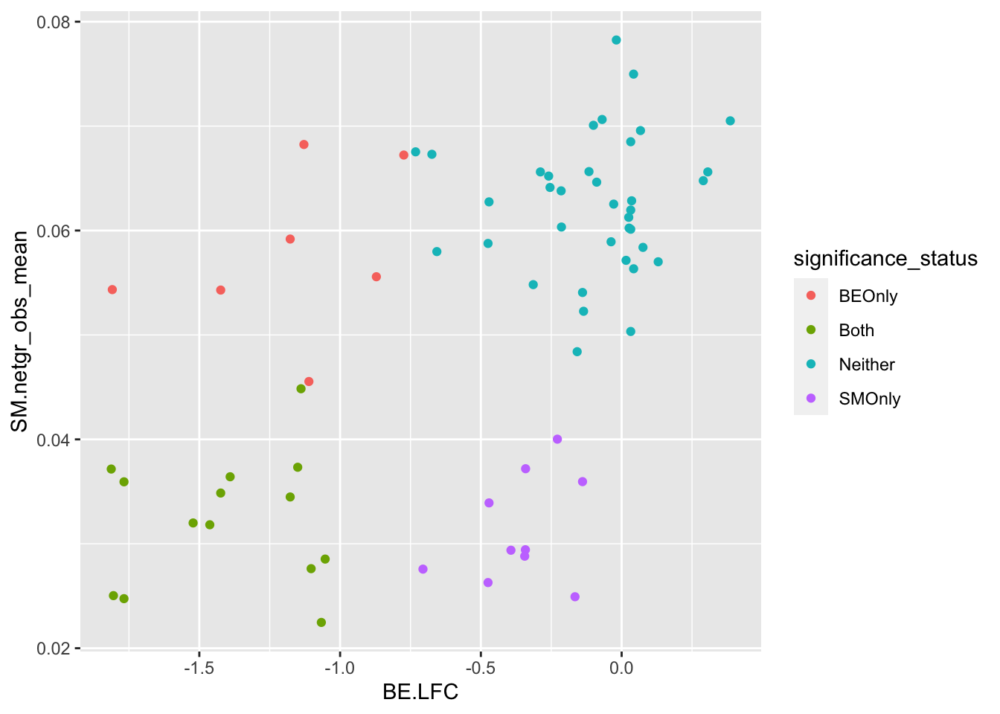
| Version | Author | Date |
|---|---|---|
| 60b906b | haiderinam | 2023-04-10 |
ggplot(bedata_bymutant%>%filter(protein_start%in%c(242:322),synonymous%in%F,Type%in%"ABE"),aes(y=sgRNA.SM.Mean.Netgr,x=BE.LFC,color=significance_status))+geom_point()
| Version | Author | Date |
|---|---|---|
| 60b906b | haiderinam | 2023-04-10 |
# ggplot(bedata_bymutant%>%filter(protein_start%in%c(242:322),synonymous%in%F,Type%in%"ABE"),aes(y=sgRNA.SM.Mean.Netgr,x=sgRNA.BE.Mean.LFC,color=significance_status))+geom_point()
bedata_roc=bedata_bymutant%>%filter(protein_start%in%c(242:322),Type%in%"ABE",synonymous%in%F)
# glm.fit.putative=glm(as.numeric(bedata_roc$SM.Significant)~bedata_roc$BE.LFC,family=binomial)
# bedata_roc$glm_fits=glm.fit.putative$fitted.values
# # ggplot(be_lfc.be,aes(x=BE.LFC,y=as.numeric(DSSP.Buried)))+geom_point()+geom_line(aes(x=BE.LFC,y=glm_fits))
# roc(as.numeric(bedata_roc$SM.Significant),bedata_roc$glm_fits,plot=T,legacy.axes=T,percent=T,xlab="False Positive Percentage",ylab="True Positive Percentage",print.auc=T)
#
# bedata_roc=bedata_roc%>%mutate(SM.Significant.admixture=case_when(sgRNA.SM.Mean.Netgr<=.045~T,
# T~F))
# glm.fit.putative=glm(as.numeric(bedata_roc$SM.Significant.admixture)~bedata_roc$BE.LFC,family=binomial)
# bedata_roc$glm_fits=glm.fit.putative$fitted.values
# # ggplot(be_lfc.be,aes(x=BE.LFC,y=as.numeric(DSSP.Buried)))+geom_point()+geom_line(aes(x=BE.LFC,y=glm_fits))
# roc(as.numeric(bedata_roc$SM.Significant.admixture),bedata_roc$glm_fits,plot=T,legacy.axes=T,percent=T,xlab="False Positive Percentage",ylab="True Positive Percentage",print.auc=T)
glm.fit.putative=glm(as.numeric(bedata_roc$BE.Significant)~bedata_roc$SM.netgr_obs_mean,family=binomial)
bedata_roc$glm_fits.putative=glm.fit.putative$fitted.values
# ggplot(be_lfc.be,aes(x=BE.LFC,y=as.numeric(DSSP.Buried)))+geom_point()+geom_line(aes(x=BE.LFC,y=glm_fits))
roc1=roc(as.numeric(bedata_roc$BE.Significant),bedata_roc$glm_fits.putative,plot=T,legacy.axes=T,percent=T,xlab="False Positive Percentage",ylab="True Positive Percentage",print.auc=T)Setting levels: control = 0, case = 1Setting direction: controls < cases
| Version | Author | Date |
|---|---|---|
| 60b906b | haiderinam | 2023-04-10 |
glm.fit.admixture=glm(as.numeric(bedata_roc$BE.Significant)~bedata_roc$sgRNA.SM.Mean.Netgr,family=binomial)
bedata_roc$glm_fits.admixture=glm.fit.admixture$fitted.values
# ggplot(be_lfc.be,aes(x=BE.LFC,y=as.numeric(DSSP.Buried)))+geom_point()+geom_line(aes(x=BE.LFC,y=glm_fits))
roc2=roc(as.numeric(bedata_roc$BE.Significant),bedata_roc$glm_fits.admixture,plot=T,legacy.axes=T,percent=T,xlab="False Positive Percentage",ylab="True Positive Percentage",print.auc=T)Setting levels: control = 0, case = 1
Setting direction: controls < cases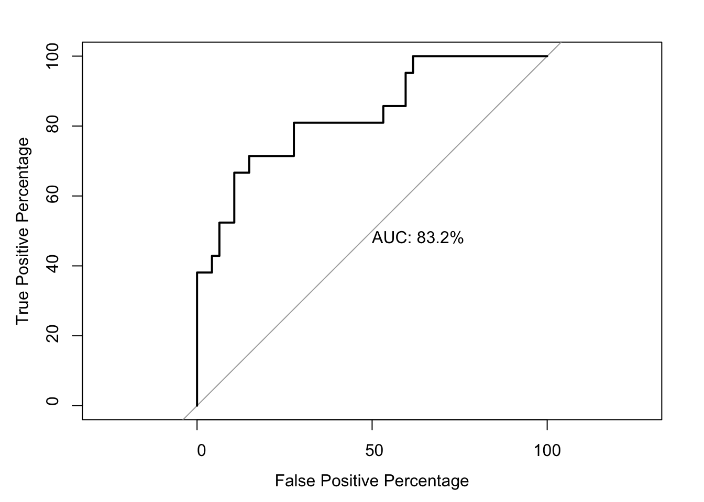
| Version | Author | Date |
|---|---|---|
| 60b906b | haiderinam | 2023-04-10 |
roc.test(roc1,roc2,alternative="less")
DeLong's test for two correlated ROC curves
data: roc1 and roc2
Z = -1.3765, p-value = 0.08433
alternative hypothesis: true difference in AUC is less than 0
sample estimates:
AUC of roc1 AUC of roc2
76.89970 83.18136 # Note that the pvalue of this one-sided DeLong's non-parametric test of comparing two ROCs is 0.0843
par(pty="s")
roc(as.numeric(bedata_roc$BE.Significant),bedata_roc$glm_fits.putative,plot=T,legacy.axes=T,percent=T,xlab="False Positive Percentage",ylab="True Positive Percentage",print.auc=T,col="#3937E3",lwd=4)Setting levels: control = 0, case = 1
Setting direction: controls < cases
Call:
roc.default(response = as.numeric(bedata_roc$BE.Significant), predictor = bedata_roc$glm_fits.putative, percent = T, plot = T, legacy.axes = T, xlab = "False Positive Percentage", ylab = "True Positive Percentage", print.auc = T, col = "#3937E3", lwd = 4)
Data: bedata_roc$glm_fits.putative in 47 controls (as.numeric(bedata_roc$BE.Significant) 0) < 21 cases (as.numeric(bedata_roc$BE.Significant) 1).
Area under the curve: 76.9%plot.roc(as.numeric(bedata_roc$BE.Significant),bedata_roc$glm_fits.admixture,legacy.axes=T,percent=T,xlab="False Positive Percentage",ylab="True Positive Percentage",print.auc=T,col="#378BE3",add=T,lwd=4,print.auc.y=45)Setting levels: control = 0, case = 1
Setting direction: controls < cases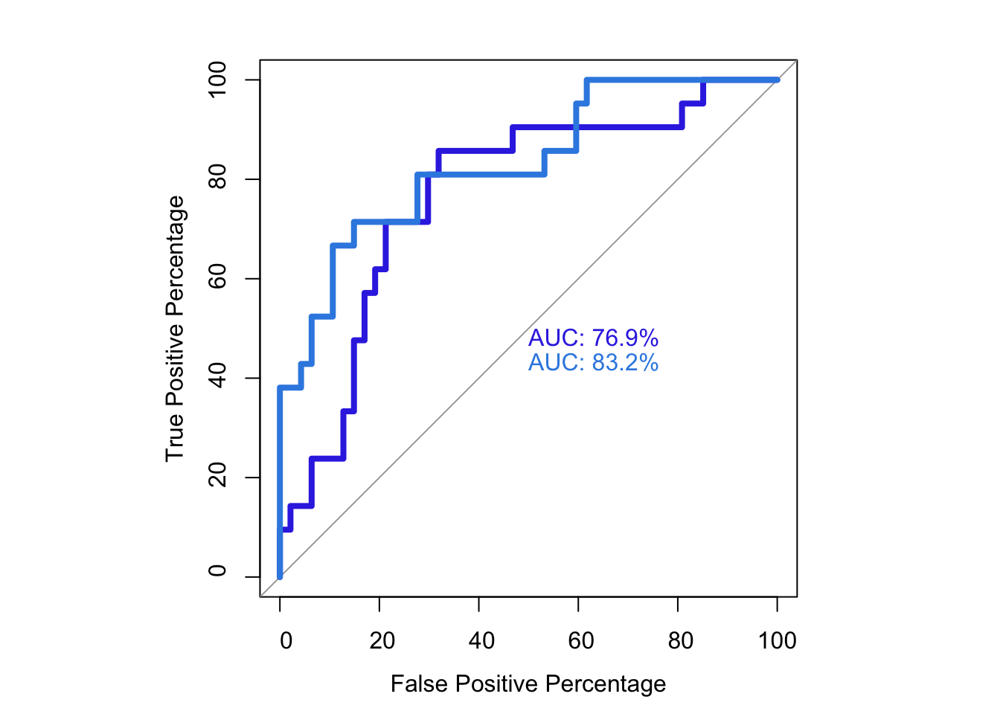
| Version | Author | Date |
|---|---|---|
| 60b906b | haiderinam | 2023-04-10 |
par(pty="m")# Overall Correlation
bedata_bymutant=bedata_bymutant%>%filter(synonymous%in%F,Type%in%"ABE")
ggplot(bedata_bymutant%>%filter(synonymous%in%F),aes(y=SM.netgr_obs_mean,x=BE.LFC,color=significance_status))+geom_point()
| Version | Author | Date |
|---|---|---|
| 60b906b | haiderinam | 2023-04-10 |
ggplot(bedata_bymutant,aes(y=SM.netgr_obs_mean,x=BE.LFC,color=significance_status,label=species))+geom_text()
| Version | Author | Date |
|---|---|---|
| 60b906b | haiderinam | 2023-04-10 |
x=bedata_bymutant%>%filter(synonymous%in%F,Type%in%"ABE")
cor(x$SM.netgr_obs_mean,x$BE.LFC)[1] 0.5573086cor(x$sgRNA.SM.Mean.Netgr,x$BE.LFC)[1] 0.6729862x=bedata_simple%>%filter(protein_start%in%c(242:322),!Ref_AA==Alt_AA,Type%in%"ABE")
cor(x$sgRNA.SM.Mean.Netgr,x$BE.LFC)[1] 0.4823657ggplot(bedata_bymutant,aes(y=SM.netgr_obs_mean,x=BE.LFC,label=species,color=significance_status))+geom_text()
| Version | Author | Date |
|---|---|---|
| 60b906b | haiderinam | 2023-04-10 |
########### Do false positives tend to be made by less sgRNAs? No###########
ggplot(bedata_bymutant,aes(x=significance_status,y=sgRNAs_per_mutant,fill=significance_status))+geom_boxplot()+
geom_jitter(color="black", size=1,width=.1, alpha=0.9)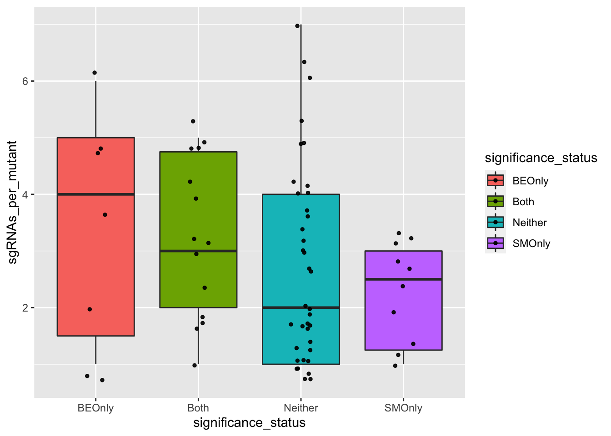
| Version | Author | Date |
|---|---|---|
| 60b906b | haiderinam | 2023-04-10 |
########### Does having more sgRNAs help at all? Not really#########
#Many sgRNAs create a single mutation. That helps create trust in a mutant's observed score.
# In a way, a mutant is an admixture of admixtures, does having more sgRNAs help? Not really
ggplot(bedata_bymutant,aes(y=SM.netgr_obs_mean,x=BE.LFC,color=sgRNAs_per_mutant))+geom_point()####### Is the depletion signal potentially masked by other mutants that an sgRNA makes? Yes#######
# Is the sgRNA.SM.Mean.Netgr of false negatives higher than that of true positives? That would indicate that false negative mutations look like they have a high LFC because they are created by sgRNAs that make neutral mutants. Ans: yes
bedata_bymutant2=bedata_bymutant
bedata_bymutant2$significance_status=factor(bedata_bymutant2$significance_status,levels=c("Neither","BEOnly","Both","SMOnly"))
ggplot(bedata_bymutant2,aes(x=significance_status,y=sgRNA.SM.Mean.Netgr,fill=significance_status))+geom_boxplot()+
geom_jitter(color="black", size=1,width=.1, alpha=0.9)+scale_fill_manual(values=c("#00BFC4","#F8766D","#7CAE00","#C77CFF"))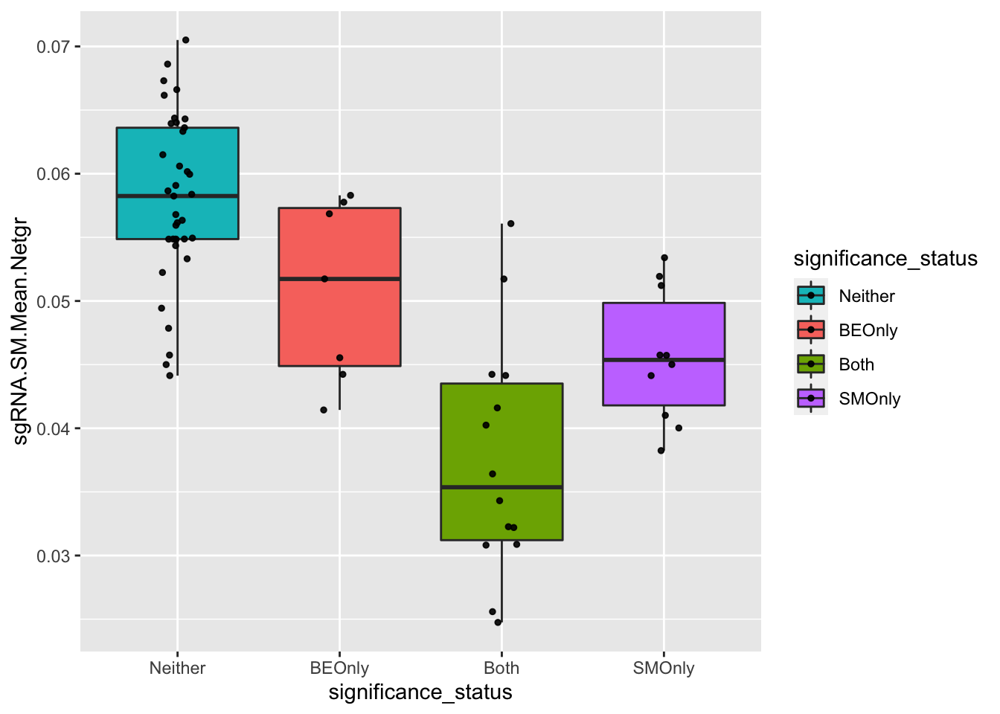
# If we calculate the expected net growth rate of an sgRNA by simulating the admixture it creates,
# we get a decent correlation coefficient
ggplot(bedata_simple%>%filter(protein_start%in%c(242:322),!Ref_AA==Alt_AA,Type%in%"ABE"),aes(y=sgRNA.SM.Mean.Netgr,x=BE.LFC))+geom_point()+stat_cor(method="pearson")+scale_x_continuous("sgRNA BE LFC")+scale_y_continuous("Net growth rate mixture model")+cleanup# ggsave("output/BE_SM_Plots/correlation_mixturemodel.pdf",width=3,height=3,units="in",useDingbats=F)
ggplot(bedata_simple%>%filter(protein_start%in%c(242:322),!Ref_AA==Alt_AA,Type%in%"ABE"),aes(y=netgr_obs_mean,x=BE.LFC))+geom_point()+stat_cor(method="pearson")+scale_x_continuous("sgRNA BE LFC")+scale_y_continuous("Net growth rate non-mixture model")+cleanup# ggsave("output/BE_SM_Plots/correlation_nonmixturemodel.pdf",width=3,height=3,units="in",useDingbats=F)
# To do later: are your sgRNA predicted growth rates better if you consider all mutants, not just the putative mutant? Answer: the predicted growth rate of the mixture model doesn't really predict much better. However, it is just as good as the putative mutant, so it is still useful when considering all possible mutants that an sgRNA can create.
# bedata_putative=bedata_simple%>%filter(protein_start%in%c(242:322),!Ref_AA==Alt_AA,Type%in%"ABE")%>%group_by(sgRNA.Seq)%>%summarize(netgr_obs_mean=netgr_obs_mean[min(distance_from_6)==T],BE.LFC=BE.LFC[min(distance_from_6)==T])
# ggplot(bedata_putative,aes(y=netgr_obs_mean,x=BE.LFC))+geom_point()+stat_cor(method="pearson")+scale_x_continuous("sgRNA BE LFC")+scale_y_continuous("Net growth rate putative mutant")+cleanup
# length(unique(x$sgRNA.Seq))
# Overall correlation for predicted admixtures
ggplot(bedata_bymutant,aes(y=sgRNA.SM.Mean.Netgr,x=BE.LFC,color=significance_status))+geom_point()
ggplot(bedata_bymutant,aes(y=sgRNA.SM.Mean.Netgr,x=BE.LFC,color=significance_status,label=species))+geom_text()# cor(bedata_bymutant$SM.netgr_obs_mean,bedata_bymutant$BE.LFC)
# x=bedata_bymutant%>%filter(!SM.netgr_obs_mean%in%"0.060000000")
# color codes: red: #F8766D, green: #7CAE00, blue: #00BFC4, purple: #C77CFF
# x=bedata_dssp%>%filter(ACC>=50,protein_start%in%c(242:322))Calculating residue-level enrichment scores from the BE screen Sliding window variables: 1. Length of what you’re trying to correlate the data with 2. Length of the prediction window: how much do you trust
smdata=read.csv("output/ABLEnrichmentScreens/ABL_Region1_Lane18_Comparisons/cross-replicate/baf3_IL3_rep1vsrep2_ft/screen_comparison_baf3_IL3_low_rep1vsrep2_ft.csv",header = T)
smdata=smdata%>%rowwise%>%mutate(netgr_obs_mean=mean(netgr_obs_screen1,netgr_obs_screen2))
smdata=smdata%>%dplyr::select(species,ref_aa,protein_start,alt_aa,netgr_obs_mean)
dssp=read.csv("data/DSSP_SolventAccessibility_ABL/2hyy_dspp.csv",header = T)
dssp=dssp%>%mutate(RESIDUE=as.numeric(RESIDUE),ACC=as.numeric(ACC),AA=gsub("<ca>","",AA))
dssp=dssp%>%rename(protein_start=RESIDUE)
# x=bedata_outer%>%filter(ABL1_AA%in%c(242:322))%>%group_by(Type,sgRNA.Seq)%>%mutate(mutants_per_sgRNA=n())
# length(unique(x$sgRNA.Seq))
# x=x%>%filter(ABL1_AA%in%c(242:322),mutants_per_sgRNA%in%c(1))
# length(unique(x$sgRNA.Seq))
# x=bedata_simple%>%filter(Type%in%"ABE",ABL1_AA%in%c(242:322),distance_from_6%in%c(0,1))%>%dplyr::select(protein_start=ABL1_AA,BE.LFC,netgr_obs_mean,sgRNA.SM.Mean.Netgr,weight)%>%ungroup()%>%group_by(protein_start)%>%summarize(BE.LFC_atresidue=mean(BE.LFC),
# BE.LFC_atresidue=weighted.mean(BE.LFC,weight),
# SM.netgr_obs_mean=weighted.mean(netgr_obs_mean,weight),
# SM.netgr_obs_mean=mean(netgr_obs_mean),
# sgRNA.SM.Mean.Netgr=mean(sgRNA.SM.Mean.Netgr))
# y=bedata_outer%>%filter(sgRNA.Seq%in%"AGCTGGGCGGGGGCCAGTAC")
# rm(weight)
# bedata_dssp=merge(x,dssp,by="protein_start")
# bedata_dssp=bedata_dssp%>%mutate(exposed=case_when(ACC>=40~"Exposed",
# T~"Buried"))
# ggplot(bedata_dssp,aes(x=ACC))+geom_histogram()
#
# ggplot(bedata_dssp,aes(x=protein_start,y=BE.LFC_atresidue,color=exposed))+
# geom_point()+
# facet_wrap(~exposed,nrow=2)+
# scale_y_continuous("Mean net growth rate at residue")+
# scale_x_continuous("Residue on the ABL Kinase")+
# labs(color="Solvent \nAccessibility")+cleanup
#
# ggplot(bedata_dssp,aes(x=protein_start,y=SM.netgr_obs_mean,color=exposed))+
# geom_point()+
# facet_wrap(~exposed,nrow=2)+
# scale_y_continuous("Mean net growth rate at residue")+
# scale_x_continuous("Residue on the ABL Kinase")+
# labs(color="Solvent \nAccessibility")+cleanup
#
# ggplot(bedata_dssp,aes(x=protein_start,y=sgRNA.SM.Mean.Netgr,color=exposed))+
# geom_point()+
# facet_wrap(~exposed,nrow=2)+
# scale_y_continuous("Mean net growth rate at residue")+
# scale_x_continuous("Residue on the ABL Kinase")+
# labs(color="Solvent \nAccessibility")+cleanup
#
# ggplot(il3_dssp,aes(x=protein_start,y=netgr_obs_mean,color=exposed))+
# geom_point()+
# facet_wrap(~exposed,nrow=2)+
# scale_y_continuous("Mean net growth rate at residue")+
# scale_x_continuous("Residue on the ABL Kinase")+
# labs(color="Solvent \nAccessibility")+cleanup
# first, I'm going to do a simple sliding window that jumps 1 amino acid at a time
bedata_byresidue=data.frame(matrix(ncol = 4, nrow=length(c(sm_start:sm_end))))
colnames(bedata_byresidue)=c("protein_start","BE.LFC.mean","BE.LFC.weighted.mean","SM.netgr.mean")
for(i in seq(sm_start:sm_end)){
# aa_i=242
aa_i=i+sm_start-1
subset_i=bedata_simple%>%filter(Type%in%"ABE",ABL1_AA%in%aa_i)
bedata_byresidue[i,"protein_start"]=aa_i
bedata_byresidue[i,"BE.LFC.mean"]=mean(subset_i$BE.LFC)
bedata_byresidue[i,"BE.LFC.weighted.mean"]=weighted.mean(subset_i$BE.LFC,subset_i$weight)
bedata_byresidue[i,"SM.netgr.mean"]=mean(subset_i$netgr_obs_mean)
}
bedata_dssp=merge(bedata_byresidue,dssp,by="protein_start")
bedata_dssp=bedata_dssp%>%mutate(exposed=case_when(ACC>=40~"Exposed",
T~"Buried"))
ggplot(bedata_dssp,aes(x=protein_start,y=BE.LFC.mean,color=exposed))+
geom_point()+
# facet_wrap(~exposed,nrow=2)+
scale_y_continuous("Mean net growth rate at residue")+
scale_x_continuous("Residue on the ABL Kinase")+
labs(color="Solvent \nAccessibility")+cleanupWarning: Removed 28 rows containing missing values (geom_point).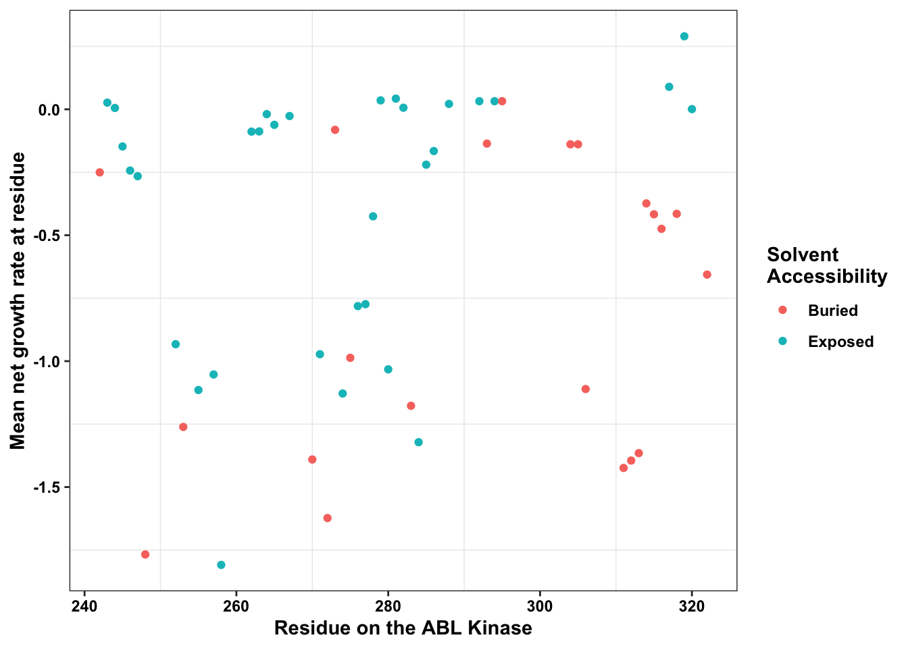
| Version | Author | Date |
|---|---|---|
| 60b906b | haiderinam | 2023-04-10 |
ggplot(bedata_dssp,aes(x=BE.LFC.mean,y=SM.netgr.mean))+geom_point()Warning: Removed 28 rows containing missing values (geom_point).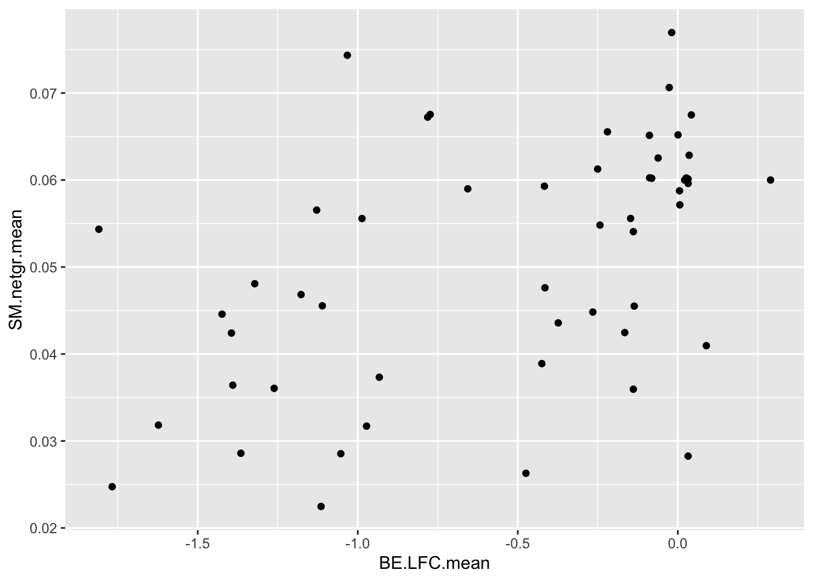
| Version | Author | Date |
|---|---|---|
| 60b906b | haiderinam | 2023-04-10 |
cor(bedata_dssp[!bedata_dssp$BE.LFC.mean%in%NaN,"BE.LFC.mean"],bedata_dssp[!bedata_dssp$BE.LFC.mean%in%NaN,"SM.netgr.mean"])[1] 0.4864502ggplot(bedata_dssp,aes(x=BE.LFC.mean,y=ACC))+geom_point()Warning: Removed 28 rows containing missing values (geom_point).ggplot(bedata_dssp,aes(x=SM.netgr.mean,y=ACC))+geom_point()Warning: Removed 28 rows containing missing values (geom_point).subset_i=bedata_simple%>%filter(Type%in%"ABE",ABL1_AA%in%c(301:305))
# bedata_byresidue=bedata_bymutant%>%group_by(Type,protein_start)Adding window length as a variable to the sliding window for loop
# rm(list=ls())
smdata=read.csv("output/ABLEnrichmentScreens/ABL_Region1_Lane18_Comparisons/cross-replicate/baf3_IL3_rep1vsrep2_ft/screen_comparison_baf3_IL3_low_rep1vsrep2_ft.csv",header = T)
smdata=smdata%>%rowwise%>%mutate(netgr_obs_mean=mean(netgr_obs_screen1,netgr_obs_screen2))
smdata=smdata%>%dplyr::select(species,ref_aa,protein_start,alt_aa,netgr_obs_mean)
dssp=read.csv("data/DSSP_SolventAccessibility_ABL/2hyy_dspp.csv",header = T)
dssp=dssp%>%mutate(RESIDUE=as.numeric(RESIDUE),ACC=as.numeric(ACC),AA=gsub("<ca>","",AA))
dssp=dssp%>%rename(protein_start=RESIDUE)
window_widths=c(1:5)
bedata_byresidue=data.frame(matrix(ncol = 4, nrow=length(c(sm_start:sm_end))))
colnames(bedata_byresidue)=c("window.width","protein_start","BE.LFC.mean","BE.LFC.weighted.mean")
for(j in 1:length(window_widths)){
window_width_i=window_widths[j]
# window_width_i=1
for(i in seq(sm_start:sm_end)){
# aa_i=242
aa_i=i+sm_start-1
subset_i=bedata_simple%>%filter(Type%in%"ABE",ABL1_AA%in%c(aa_i:(aa_i+window_width_i-1)))
sm_subset_i=smdata%>%filter(protein_start%in%c(aa_i:(aa_i+window_width_i-1)))
bedata_byresidue[i,"window.width"]=window_width_i
bedata_byresidue[i,"protein_start"]=aa_i
bedata_byresidue[i,"BE.LFC.mean"]=mean(subset_i$BE.LFC)
bedata_byresidue[i,"BE.LFC.weighted.mean"]=weighted.mean(subset_i$BE.LFC,subset_i$weight)
# bedata_byresidue[i,"SM.netgr.mean.BEsubset"]=mean(subset_i$netgr_obs_mean)
# bedata_byresidue[i,"SM.netgr.mean"]=mean(sm_subset_i$netgr_obs_mean)
}
if(j%in%1){
bedata_byresidue_bywindowwidth=bedata_byresidue
} else {
bedata_byresidue_bywindowwidth=rbind(bedata_byresidue_bywindowwidth,bedata_byresidue)
}
}
# bedata_byresidue=bedata_simple%>%filter(Type%in%"ABE",ABL1_AA%in%c(sm_start:sm_end))%>%group_by(ABL1_AA)%>%summarize(BE.LFC.mean=mean(BE.LFC),BE.LFC.weighted.mean=weighted.mean(BE.LFC,weight))%>%mutate(window.width=0)%>%dplyr::select(window.width,protein_start=ABL1_AA,BE.LFC.mean,BE.LFC.weighted.mean)
# bedata_byresidue_bywindowwidth=rbind(bedata_byresidue,bedata_byresidue_bywindowwidth)
smdata_byresidue=smdata%>%filter(protein_start%in%c(sm_start:sm_end))%>%group_by(protein_start)%>%summarize(SM.netgr.mean=mean(netgr_obs_mean))
bedata_byresidue_bywindowwidth=merge(bedata_byresidue_bywindowwidth,smdata_byresidue%>%dplyr::select(protein_start,SM.netgr.mean))
# x=bedata_byresidue_bywindowwidth%>%filter(protein_start%in%242)
bedata_dssp=merge(bedata_byresidue_bywindowwidth,dssp,by="protein_start")
bedata_dssp=bedata_dssp%>%mutate(exposed=case_when(ACC>=40~"Exposed",
T~"Buried"))
ggplot(bedata_dssp,aes(x=protein_start,y=BE.LFC.mean,color=exposed))+
geom_point()+
# facet_wrap(~exposed,nrow=2)+
# facet_grid(exposed~window.width)+
facet_wrap(~window.width,nrow=5)+
scale_y_continuous("Mean BE LFC at residue")+
scale_x_continuous("Residue on the ABL Kinase")+
labs(color="Solvent \nAccessibility")+cleanup+theme(legend.position = "none")Warning: Removed 66 rows containing missing values (geom_point).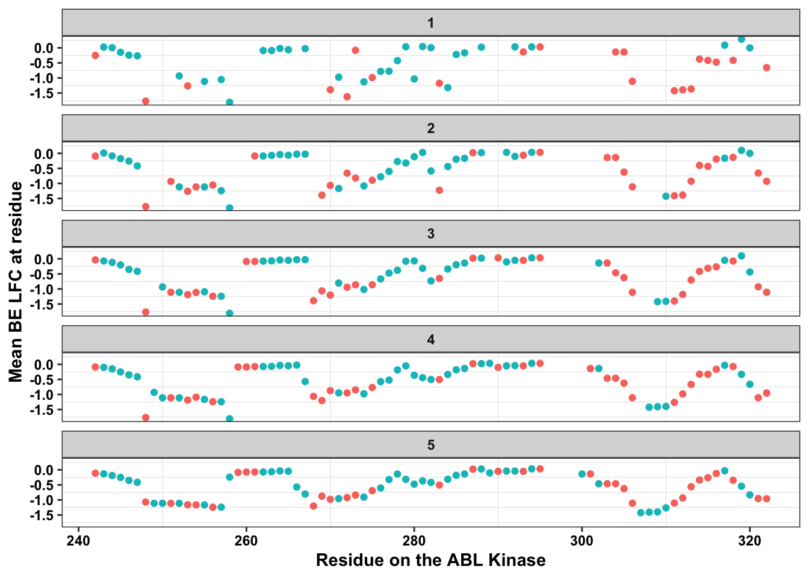
| Version | Author | Date |
|---|---|---|
| 60b906b | haiderinam | 2023-04-10 |
# ggsave("output/BE_SM_Plots/be_slidingwindow_all.pdf",width=4,height=5,units="in",useDingbats=F)
# ggplot(bedata_dssp,aes(x=protein_start,y=SM.netgr.mean,color=exposed))+
# geom_point()+
# # facet_wrap(~exposed,nrow=2)+
# # facet_grid(exposed~window.width)+
# facet_wrap(~window.width,nrow=5)+
# scale_y_continuous("Mean net growth rate at residue")+
# scale_x_continuous("Residue on the ABL Kinase")+
# labs(color="Solvent \nAccessibility")+cleanup
alternatingregion=bedata_simple%>%filter(Type%in%"ABE",protein_start%in%293)
alternatingregion_sgRNA=bedata_simple%>%filter(Type%in%"ABE",sgRNA.Seq%in%"GAGATCAAACACCCTAACCT")
ggplot(bedata_dssp%>%filter(window.width==1),aes(x=protein_start,y=SM.netgr.mean,color=exposed))+
geom_point()+
facet_wrap(~exposed,nrow=2)+
# facet_grid(exposed~window.width)+
# facet_wrap(~window.width,nrow=5)+
scale_y_continuous("Mean BE LFC at residue")+
scale_x_continuous("Residue on the ABL Kinase")+
labs(color="Solvent \nAccessibility")+cleanup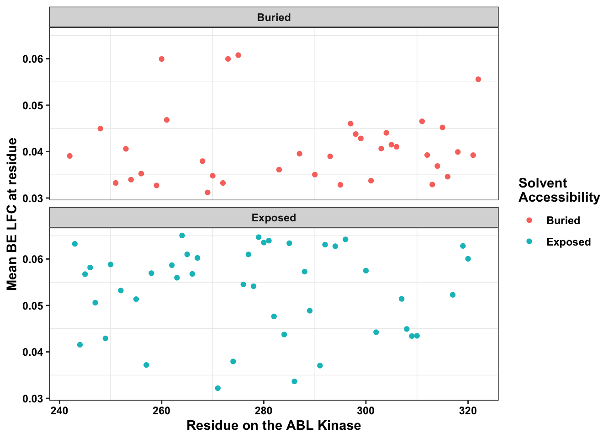
| Version | Author | Date |
|---|---|---|
| 60b906b | haiderinam | 2023-04-10 |
# x=bedata_dssp%>%filter(window.width==1)
ggplot(bedata_dssp%>%filter(window.width==1),aes(x=protein_start,y=BE.LFC.mean))+
geom_point()+
# facet_wrap(~exposed,nrow=2)+
# facet_grid(exposed~window.width)+
# facet_wrap(~window.width,nrow=5)+
scale_y_continuous("Mean BE LFC at residue")+
scale_x_continuous("Residue on the ABL Kinase")+
labs(color="Solvent \nAccessibility")+cleanupWarning: Removed 28 rows containing missing values (geom_point).
| Version | Author | Date |
|---|---|---|
| 60b906b | haiderinam | 2023-04-10 |
# ggsave("output/BE_SM_Plots/be_slidingwindow_1.pdf",width=3,height=2,units="in",useDingbats=F)
bedata_byresidue_bywindowwidth=bedata_byresidue_bywindowwidth%>%
mutate(BE.Significant=case_when(abs(BE.LFC.mean)>0.5~T,
T~F),
SM.Significant=case_when(SM.netgr.mean<0.04~T,
T~F))%>%
rowwise()%>%
mutate(significance_status=case_when((BE.Significant%in%T)&&(SM.Significant%in%F)~"BEOnly",
(BE.Significant%in%F)&&(SM.Significant%in%T)~"SMOnly",
(BE.Significant%in%T)&&(SM.Significant%in%T)~"Both",
T~"Neither"),
species=protein_start)
bedata_dssp=bedata_dssp%>%
mutate(BE.Significant=case_when(abs(BE.LFC.mean)>0.5~T,
T~F),
SM.Significant=case_when(SM.netgr.mean<0.04~T,
T~F))%>%
rowwise()%>%
mutate(significance_status=case_when((BE.Significant%in%T)&&(SM.Significant%in%F)~"BEOnly",
(BE.Significant%in%F)&&(SM.Significant%in%T)~"SMOnly",
(BE.Significant%in%T)&&(SM.Significant%in%T)~"Both",
T~"Neither"),
species=protein_start)
bedata_dssp_sum=bedata_dssp%>%filter(!BE.LFC.mean%in%NaN)%>%group_by(window.width)%>%summarize(cor.be.dssp=cor(BE.LFC.mean,ACC),
cor.be.sm=cor(BE.LFC.mean,SM.netgr.mean),
cor.sm.dssp=cor(SM.netgr.mean,ACC))
# Figuring out the FET p-values for BE vs SM for all
# fisher.test(contab_maker(bedata_dssp%>%filter(!BE.LFC.mean%in%NaN,window.width==4)))$p.value
x=rbind(fisher.test(contab_maker(bedata_dssp%>%filter(window.width==1)))$p.value,fisher.test(contab_maker(bedata_dssp%>%filter(window.width==2)))$p.value,fisher.test(contab_maker(bedata_dssp%>%filter(window.width==3)))$p.value,fisher.test(contab_maker(bedata_dssp%>%filter(window.width==4)))$p.value,fisher.test(contab_maker(bedata_dssp%>%filter(window.width==5)))$p.value)
bedata_dssp_sum$fet.pval.be.sm=x[,1]
# Next thing: plot by nucleotide, and not just residuePlotting buried hydrophobic vs exposed regions
bedata_dssp=bedata_dssp%>%mutate(netgr_score=(SM.netgr.mean-.03)/.03,
lfc_score=(BE.LFC.mean/1.5)+1,
acc_score=ACC/100)
ggplot(bedata_dssp%>%filter(protein_start%in%c(290:297),window.width==1),aes(x=protein_start))+geom_line(color="red",aes(y=netgr_score))+geom_point(aes(y=netgr_score))+geom_line(color="green",aes(y=acc_score))+geom_point(aes(y=acc_score))+geom_line(color="blue",aes(y=lfc_score))+geom_point(aes(y=lfc_score))Warning: Removed 4 row(s) containing missing values (geom_path).Warning: Removed 4 rows containing missing values (geom_point).
| Version | Author | Date |
|---|---|---|
| 60b906b | haiderinam | 2023-04-10 |
ggplot(bedata_dssp%>%filter(protein_start%in%c(264:274),window.width==1),aes(x=protein_start))+geom_line(color="red",aes(y=netgr_score))+geom_point(aes(y=netgr_score))+geom_line(color="green",aes(y=acc_score))+geom_point(aes(y=acc_score))+geom_line(color="blue",aes(y=lfc_score))+geom_point(aes(y=lfc_score))Warning: Removed 3 rows containing missing values (geom_point).
| Version | Author | Date |
|---|---|---|
| 60b906b | haiderinam | 2023-04-10 |
library(reshape2)
bedata_dssp_melt=melt(bedata_dssp%>%filter(window.width%in%1),id.vars="protein_start" ,measure.vars = c("netgr_score","lfc_score","acc_score"),variable.name = "measurement_type",value.name = "score")
bedata_dssp_melt$measurement_type=factor(bedata_dssp_melt$measurement_type,levels=c("netgr_score","lfc_score","acc_score"))
ggplot(bedata_dssp_melt%>%filter(protein_start%in%c(290:297)),aes(x=protein_start,y=measurement_type,fill=score))+
geom_tile()+
# scale_fill_gradient2(low ="darkblue",midpoint=0.5, high ="red",name="Score")+
scale_fill_gradient(low ="darkblue", high ="red",name="Score")+
scale_y_discrete("",expand=c(0,0),labels=c("SM\ndata","BE\ndata","Solvent\nAccessibility"))+scale_x_continuous("",expand=c(0,0),breaks=c(290:297),labels=c("290","291","292","293","294","295","296","297"))+theme(legend.position = "none",axis.text.x = element_text(angle = 90, vjust = 0.5, hjust=1),axis.text.y=element_blank(),axis.ticks.y=element_blank())
| Version | Author | Date |
|---|---|---|
| 60b906b | haiderinam | 2023-04-10 |
# ggsave("output/BE_SM_Plots/heatmap_forBEComparisons_290.pdf",width=2,height = 2,units = "in",useDingbats=F)
# ggsave("output/BE_SM_Plots/heatmap_forBEComparisons_290.pdf",useDingbats=F)
#######Making heatmap for IL3 data
smdata=read.csv("output/ABLEnrichmentScreens/ABL_Region1_Lane18_Comparisons/cross-replicate/baf3_IL3_rep1vsrep2_ft/screen_comparison_baf3_IL3_low_rep1vsrep2_ft.csv",header = T)
smdata=smdata%>%rowwise%>%mutate(netgr_obs_mean=mean(netgr_obs_screen1,netgr_obs_screen2))
# smdata=smdata%>%dplyr::select(species,ref_aa,protein_start,alt_aa,netgr_obs_mean)
heatmap_plotting_function(smdata,290,297,fill_variable = "netgr_obs_mean",fill_name = "Net growth rate")+
scale_x_continuous(name="",expand=c(0,0),breaks=c(290:297),labels=c("290","291","292","293","294","295","296","297"))+
scale_fill_gradient(low ="darkblue", high ="red",name="Net growth rate")+theme(legend.position = "none",axis.text.x = element_text(angle = 90, vjust = 0.5, hjust=1))Scale for 'x' is already present. Adding another scale for 'x', which will
replace the existing scale.Scale for 'fill' is already present. Adding another scale for 'fill', which
will replace the existing scale.
| Version | Author | Date |
|---|---|---|
| 60b906b | haiderinam | 2023-04-10 |
# ggsave("output/BE_SM_Plots/heatmap_forlollipop_290.pdf",width=2,height = 4,units = "in",useDingbats=F)
ggplot(bedata_dssp_melt%>%filter(protein_start%in%c(264:274)),aes(x=protein_start,y=measurement_type,fill=score))+
geom_tile()+
# scale_fill_gradient2(low ="darkblue",midpoint=0.5, high ="red",name="Score")+
scale_fill_gradient(low ="darkblue", high ="red",name="Score")+
scale_y_discrete("",expand=c(0,0),labels=c("SM\ndata","BE\ndata","Solvent\nAccessibility"))+scale_x_continuous("",expand=c(0,0),breaks=c(264:274),labels=c("264","265","266","267","268","269","270","271","272","273","274"))+theme(legend.position = "none",axis.text.x = element_text(angle = 90, vjust = 0.5, hjust=1),axis.text.y=element_blank(),axis.ticks.y=element_blank())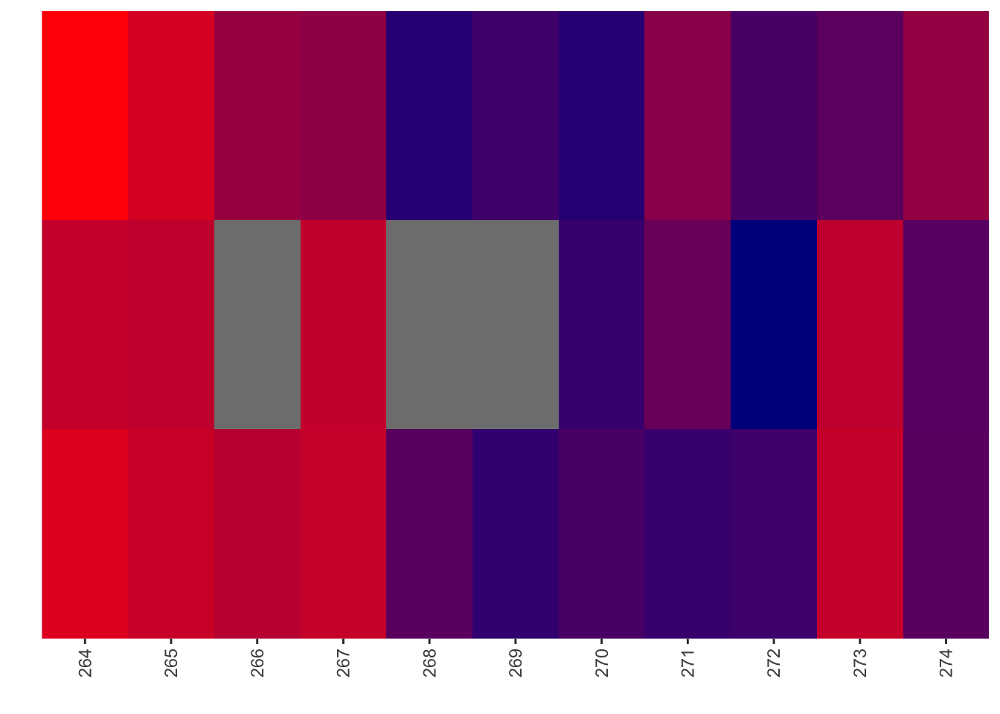
| Version | Author | Date |
|---|---|---|
| 60b906b | haiderinam | 2023-04-10 |
# ggsave("output/BE_SM_Plots/heatmap_forBEComparisons_264.pdf",width=2,height = 2,units = "in",useDingbats=F)
# ggsave("output/BE_SM_Plots/heatmap_forBEComparisons_290.pdf",useDingbats=F)
#######Making heatmap for IL3 data
smdata=read.csv("output/ABLEnrichmentScreens/ABL_Region1_Lane18_Comparisons/cross-replicate/baf3_IL3_rep1vsrep2_ft/screen_comparison_baf3_IL3_low_rep1vsrep2_ft.csv",header = T)
smdata=smdata%>%rowwise%>%mutate(netgr_obs_mean=mean(netgr_obs_screen1,netgr_obs_screen2))
# smdata=smdata%>%dplyr::select(species,ref_aa,protein_start,alt_aa,netgr_obs_mean)
heatmap_plotting_function(smdata,263,274,fill_variable = "netgr_obs_mean",fill_name = "Net growth rate")+
scale_x_continuous(name="",expand=c(0,0),breaks=c(264:274),labels=c("264","265","266","267","268","269","270","271","272","273","274"))+
scale_fill_gradient(low ="darkblue", high ="red",name="Net growth rate")+theme(legend.position = "none",axis.text.x = element_text(angle = 90, vjust = 0.5, hjust=1))Scale for 'x' is already present. Adding another scale for 'x', which will
replace the existing scale.
Scale for 'fill' is already present. Adding another scale for 'fill', which
will replace the existing scale.# ggsave("output/BE_SM_Plots/heatmap_forlollipop_264.pdf",width=2.4,height = 4,units = "in",useDingbats=F)SLIDING WINDOW ANALYSES One way to look at the utility of BE data is looking at a residue-by-residue basis rather than a mutant by mutant basis Attempting to do an ROC curve for which sliding window model is the best at estimating SM true positives 1. BE data doesn’t work well on a residue-by-residue basis. Build an ROC curve that shows that SM data works much better at predicting exposed vs buried than BE data 2. Some BE data models work better than others… i.e. the two residue model works better than the 1 or 5 residue model at predicting SM true positives 3. The types of effects that all these models miss are sandwich effects where there are + and - effects next to each other. Presumably because if an sgRNA makes both + and - mutants, their combined effect is a neutral effect
library(pROC)
bedata_roc=bedata_bymutant%>%filter(!synonymous%in%T,protein_start%in%c(242:322))
# Doing the ROC curve by mutant, not by residue
be_lfc=bedata_roc%>%dplyr::select(BE.LFC,BE.Significant,SM.netgr_obs_mean,SM.Significant)
be_lfc$BE.Significant=as.numeric(be_lfc$BE.Significant)
ggplot(be_lfc,aes(x=BE.LFC,y=BE.Significant))+geom_point()ggplot(be_lfc,aes(x=BE.LFC,y=SM.Significant))+geom_point()glm.fit=glm(as.numeric(be_lfc$SM.Significant)~be_lfc$BE.LFC,family=binomial)
be_lfc$glm_fits=glm.fit$fitted.values
# Note that the variable used for the threshold for significance is the BE LFC.
ggplot(be_lfc,aes(x=BE.LFC,y=as.numeric(SM.Significant)))+geom_point()+geom_line(aes(x=BE.LFC,y=glm_fits))par(pty="s")
roc(as.numeric(be_lfc$SM.Significant),be_lfc$glm_fits,plot=T,legacy.axes=T,percent=T,xlab="False Positive Percentage",ylab="True Positive Percentage",print.auc=T)Setting levels: control = 0, case = 1Setting direction: controls < cases
Call:
roc.default(response = as.numeric(be_lfc$SM.Significant), predictor = be_lfc$glm_fits, percent = T, plot = T, legacy.axes = T, xlab = "False Positive Percentage", ylab = "True Positive Percentage", print.auc = T)
Data: be_lfc$glm_fits in 44 controls (as.numeric(be_lfc$SM.Significant) 0) < 24 cases (as.numeric(be_lfc$SM.Significant) 1).
Area under the curve: 84.52%par(pty="m")
# Doing the ROC curve by residue, not by mutant
# Assuming that each residue that is not seen by the BE data is a neutral residue
# bedata_byresidue_bywindowwidth2=bedata_byresidue_bywindowwidth
# bedata_byresidue_bywindowwidth=bedata_byresidue_bywindowwidth2
# bedata_byresidue_bywindowwidth=bedata_byresidue_bywindowwidth%>%dplyr::select(-BE.LFC.mean)%>%dplyr::rename(BE.LFC.mean=BE.LFC.weighted.mean)
bedata_roc=bedata_byresidue_bywindowwidth%>%
# filter(window.width%in%1,!BE.LFC.mean%in%NaN)%>%
filter(!BE.LFC.mean%in%NaN)%>%
mutate(BE.LFC=BE.LFC.mean,
SM.netgr_obs_mean=SM.netgr.mean,
BE.LFC=case_when(BE.LFC%in%NaN~0,
T~BE.LFC))
be_lfc=bedata_roc%>%dplyr::select(window.width,BE.LFC,BE.Significant,SM.netgr_obs_mean,SM.Significant)
be_lfc.1=be_lfc%>%filter(window.width%in%1)
be_lfc.2=be_lfc%>%filter(window.width%in%2)
be_lfc.3=be_lfc%>%filter(window.width%in%3)
be_lfc.4=be_lfc%>%filter(window.width%in%4)
be_lfc.5=be_lfc%>%filter(window.width%in%5)
# be_lfc$BE.Significant=as.numeric(be_lfc$BE.Significant)
# ggplot(be_lfc,aes(x=BE.LFC,y=BE.Significant))+geom_point()
# ggplot(be_lfc,aes(x=BE.LFC,y=SM.Significant))+geom_point()
glm.fit.1=glm(as.numeric(be_lfc.1$SM.Significant)~be_lfc.1$BE.LFC,family=binomial)
glm.fit.2=glm(as.numeric(be_lfc.2$SM.Significant)~be_lfc.2$BE.LFC,family=binomial)
glm.fit.3=glm(as.numeric(be_lfc.3$SM.Significant)~be_lfc.3$BE.LFC,family=binomial)
glm.fit.4=glm(as.numeric(be_lfc.4$SM.Significant)~be_lfc.4$BE.LFC,family=binomial)
glm.fit.5=glm(as.numeric(be_lfc.5$SM.Significant)~be_lfc.5$BE.LFC,family=binomial)
be_lfc.1$glm_fits=glm.fit.1$fitted.values
be_lfc.2$glm_fits=glm.fit.2$fitted.values
be_lfc.3$glm_fits=glm.fit.3$fitted.values
be_lfc.4$glm_fits=glm.fit.4$fitted.values
be_lfc.5$glm_fits=glm.fit.5$fitted.values
ggplot(be_lfc.2,aes(x=BE.LFC,y=as.numeric(SM.Significant)))+geom_point()+geom_line(aes(x=BE.LFC,y=glm_fits))# roc(as.numeric(be_lfc$SM.Significant),be_lfc$glm_fits,plot=T,legacy.axes=T,percent=T,xlab="False Positive Percentage",ylab="True Positive Percentage",print.auc=T)
par(pty="s")
roc(as.numeric(be_lfc.1$SM.Significant),be_lfc.1$glm_fits,plot=T,legacy.axes=T,percent=T,xlab="False Positive Percentage",ylab="True Positive Percentage",print.auc=T,col="#3937E3",lwd=4)Setting levels: control = 0, case = 1
Setting direction: controls < cases
Call:
roc.default(response = as.numeric(be_lfc.1$SM.Significant), predictor = be_lfc.1$glm_fits, percent = T, plot = T, legacy.axes = T, xlab = "False Positive Percentage", ylab = "True Positive Percentage", print.auc = T, col = "#3937E3", lwd = 4)
Data: be_lfc.1$glm_fits in 38 controls (as.numeric(be_lfc.1$SM.Significant) 0) < 15 cases (as.numeric(be_lfc.1$SM.Significant) 1).
Area under the curve: 70.53%plot.roc(as.numeric(be_lfc.2$SM.Significant),be_lfc.2$glm_fits,legacy.axes=T,percent=T,xlab="False Positive Percentage",ylab="True Positive Percentage",print.auc=T,col="#378BE3",add=T,lwd=4,print.auc.y=45)Setting levels: control = 0, case = 1
Setting direction: controls < cases# plot.roc(as.numeric(be_lfc.3$SM.Significant),be_lfc.3$glm_fits,legacy.axes=T,percent=T,xlab="False Positive Percentage",ylab="True Positive Percentage",print.auc=T,col="#37E1E3",add=T,lwd=4,print.auc.y=40)
# plot.roc(as.numeric(be_lfc.4$SM.Significant),be_lfc.4$glm_fits,legacy.axes=T,percent=T,xlab="False Positive Percentage",ylab="True Positive Percentage",print.auc=T,col="#37E38F",add=T,lwd=4,print.auc.y=35)
plot.roc(as.numeric(be_lfc.5$SM.Significant),be_lfc.5$glm_fits,legacy.axes=T,percent=T,xlab="False Positive Percentage",ylab="True Positive Percentage",print.auc=T,col="#37E339",add=T,lwd=4,print.auc.y=40)Setting levels: control = 0, case = 1
Setting direction: controls < casespar(pty="m")# Demonstrating that the SM data works better at predicting residue exposure than the BE data
# bedata_roc=bedata_dssp%>%filter(window.width%in%1)
bedata_roc=bedata_dssp%>%
# filter(window.width%in%1)%>%
filter(window.width%in%1,!BE.LFC.mean%in%NaN)%>%
mutate(BE.LFC=BE.LFC.mean,
SM.netgr_obs_mean=SM.netgr.mean,
BE.LFC=case_when(BE.LFC%in%NaN~0,
T~BE.LFC),
SM.netgr_obs_mean=case_when(SM.netgr_obs_mean%in%NaN~0.05,
T~SM.netgr_obs_mean),
DSSP.Buried=case_when(ACC>=50~F,
T~T))
# be_lfc$BE.Significant=as.numeric(be_lfc$BE.Significant)
# ggplot(be_lfc,aes(x=BE.LFC,y=BE.Significant))+geom_point()
# ggplot(be_lfc,aes(x=BE.LFC,y=SM.Significant))+geom_point()
# BE predicting DSSP:
be_lfc.be=bedata_roc%>%
# filter(!BE.LFC%in%0)%>%
dplyr::select(BE.LFC,BE.Significant,SM.netgr_obs_mean,SM.Significant,exposed,DSSP.Buried)
glm.fit.be=glm(as.numeric(be_lfc.be$DSSP.Buried)~be_lfc.be$BE.LFC,family=binomial)
be_lfc.be$glm_fits=glm.fit.be$fitted.values
ggplot(be_lfc.be,aes(x=BE.LFC,y=as.numeric(DSSP.Buried)))+geom_point()+geom_line(aes(x=BE.LFC,y=glm_fits))roc(as.numeric(be_lfc.be$DSSP.Buried),be_lfc.be$glm_fits,plot=T,legacy.axes=T,percent=T,xlab="False Positive Percentage",ylab="True Positive Percentage",print.auc=T)Setting levels: control = 0, case = 1Setting direction: controls < cases
Call:
roc.default(response = as.numeric(be_lfc.be$DSSP.Buried), predictor = be_lfc.be$glm_fits, percent = T, plot = T, legacy.axes = T, xlab = "False Positive Percentage", ylab = "True Positive Percentage", print.auc = T)
Data: be_lfc.be$glm_fits in 30 controls (as.numeric(be_lfc.be$DSSP.Buried) 0) < 23 cases (as.numeric(be_lfc.be$DSSP.Buried) 1).
Area under the curve: 69.71%# SM predicting DSSP:
be_lfc.sm=bedata_roc%>%dplyr::select(BE.LFC,BE.Significant,SM.netgr_obs_mean,SM.Significant,exposed,DSSP.Buried)
glm.fit.sm=glm(as.numeric(be_lfc.sm$DSSP.Buried)~be_lfc.sm$SM.netgr_obs_mean,family=binomial)
be_lfc.sm$glm_fits=glm.fit.sm$fitted.values
ggplot(be_lfc.sm,aes(x=SM.netgr_obs_mean,y=as.numeric(DSSP.Buried)))+geom_point()+geom_line(aes(x=SM.netgr_obs_mean,y=glm_fits))roc(as.numeric(be_lfc.sm$DSSP.Buried),be_lfc.sm$glm_fits,plot=T,legacy.axes=T,percent=T,xlab="False Positive Percentage",ylab="True Positive Percentage",print.auc=T)Setting levels: control = 0, case = 1
Setting direction: controls < cases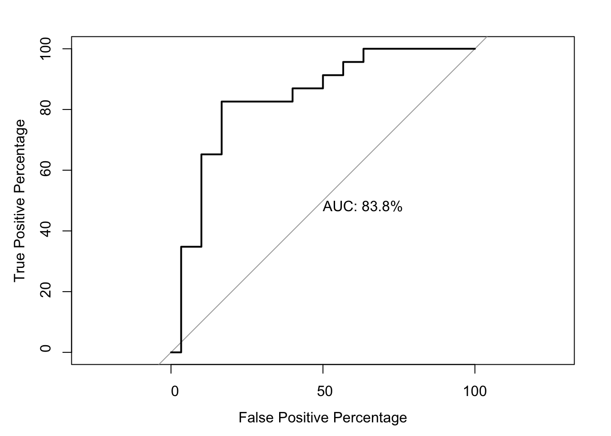
Call:
roc.default(response = as.numeric(be_lfc.sm$DSSP.Buried), predictor = be_lfc.sm$glm_fits, percent = T, plot = T, legacy.axes = T, xlab = "False Positive Percentage", ylab = "True Positive Percentage", print.auc = T)
Data: be_lfc.sm$glm_fits in 30 controls (as.numeric(be_lfc.sm$DSSP.Buried) 0) < 23 cases (as.numeric(be_lfc.sm$DSSP.Buried) 1).
Area under the curve: 83.77%par(pty="s")
roc(as.numeric(be_lfc.be$DSSP.Buried),be_lfc.be$glm_fits,plot=T,legacy.axes=T,percent=T,xlab="False Positive Percentage",ylab="True Positive Percentage",print.auc=T,col="#3937E3",lwd=4)Setting levels: control = 0, case = 1
Setting direction: controls < cases
Call:
roc.default(response = as.numeric(be_lfc.be$DSSP.Buried), predictor = be_lfc.be$glm_fits, percent = T, plot = T, legacy.axes = T, xlab = "False Positive Percentage", ylab = "True Positive Percentage", print.auc = T, col = "#3937E3", lwd = 4)
Data: be_lfc.be$glm_fits in 30 controls (as.numeric(be_lfc.be$DSSP.Buried) 0) < 23 cases (as.numeric(be_lfc.be$DSSP.Buried) 1).
Area under the curve: 69.71%plot.roc(as.numeric(be_lfc.sm$DSSP.Buried),be_lfc.sm$glm_fits,legacy.axes=T,percent=T,xlab="False Positive Percentage",ylab="True Positive Percentage",print.auc=T,col="#378BE3",add=T,lwd=4,print.auc.y=45)Setting levels: control = 0, case = 1
Setting direction: controls < casespar(pty="m")
# rocdata=roc(as.numeric(be_lfc$DSSP.Buried),be_lfc$glm_fits)
# rocdata_df=data.frame(rocdata)
# plot(1-rocdata$specificities,rocdata$sensitivities)
# ggplot(rocdata,aes(x=1-speci))Making lollipop plot with heatmap overlayed underneath it
bedata_bymutant2=bedata_bymutant%>%filter(protein_start%in%c(242:322),Type%in%"ABE",synonymous%in%F)
bedata_bymutant2$significance_status=factor(bedata_bymutant2$significance_status,levels=c("Neither","Both","SMOnly","BEOnly"))
source("code/plotting/heatmap_plotting_function.R")
ggplot(bedata_byresidue_bywindowwidth%>%filter(window.width%in%1),aes(x=protein_start,y=BE.LFC.mean))+
geom_point()+geom_segment( aes(x=protein_start, xend=protein_start, y=-.5, yend=BE.LFC.mean))+
scale_x_continuous(name="Residue on the ABL Kinase",limits=c(242,322),expand=c(0,0))+
scale_y_continuous(name="BE LFC")+
theme(panel.grid.major = element_blank(),
panel.grid.minor.x = element_blank())Warning: Removed 28 rows containing missing values (geom_point).Warning: Removed 28 rows containing missing values (geom_segment).# ggsave("output/BE_SM_Plots/lollipop.pdf",width=6,height = 2,units = "in",useDingbats=F)
# ggplot(bedata_byresidue_bywindowwidth%>%filter(window.width%in%1),aes(x=protein_start,y=SM.netgr.mean))+
# geom_point()+geom_segment( aes(x=protein_start, xend=protein_start, y=.045, yend=SM.netgr.mean))
#######Making heatmap for IL3 data
smdata=read.csv("output/ABLEnrichmentScreens/ABL_Region1_Lane18_Comparisons/cross-replicate/baf3_IL3_rep1vsrep2_ft/screen_comparison_baf3_IL3_low_rep1vsrep2_ft.csv",header = T)
smdata=smdata%>%rowwise%>%mutate(netgr_obs_mean=mean(netgr_obs_screen1,netgr_obs_screen2))
# smdata=smdata%>%dplyr::select(species,ref_aa,protein_start,alt_aa,netgr_obs_mean)
heatmap_plotting_function(smdata,242,321,fill_variable = "netgr_obs_mean",fill_name = "Net growth rate")+
scale_x_continuous(name="Residue on the ABL Kinase",limits=c(242,322),expand=c(0,0))+
scale_fill_gradient(low ="darkblue", high ="red",name="Net growth rate")Scale for 'x' is already present. Adding another scale for 'x', which will
replace the existing scale.Scale for 'fill' is already present. Adding another scale for 'fill', which
will replace the existing scale.# ggsave("output/BE_SM_Plots/heatmap_forlollipop.pdf",width=6,height = 4,units = "in",useDingbats=F)
#######Making heatmap for Imatinib data
smdata=read.csv("output/ABLEnrichmentScreens/ABL_Region1_Lane18_Comparisons/cross-replicate/k562_imat_high_rep1vsrep2/screen_comparison_k562_imat_high_rep1vsrep2.csv",header = T)
smdata=smdata%>%rowwise%>%mutate(netgr_obs_mean=mean(netgr_obs_screen1,netgr_obs_screen2))
# smdata=smdata%>%dplyr::select(species,ref_aa,protein_start,alt_aa,netgr_obs_mean)
heatmap_plotting_function(smdata,242,321,fill_variable = "netgr_obs_mean",fill_name = "Net growth rate")+
scale_x_continuous(name="Residue on the ABL Kinase",limits=c(242,322),expand=c(0,0))+
# scale_fill_gradient(low ="darkblue", high ="red",name="Net growth rate")+
theme(legend.position = "none")Scale for 'x' is already present. Adding another scale for 'x', which will
replace the existing scale.# ggsave("output/BE_SM_Plots/heatmap_forlollipop.pdf",width=6,height = 4,units = "in",useDingbats=F)
#######
# heatmap_plotting_function(smdata,242,321,fill_variable = "netgr_obs_mean",fill_name = "Net growth rate")+scale_fill_gradient2(low ="darkblue",mid="white",midpoint = .045, high ="red")
# To merge plots, you can use the code in the following URL: https://felixfan.github.io/stacking-plots-same-x/
# Correlation Plots for the BE data and the SM data:
ggplot(smdata,aes(x=netgr_obs_screen1,y=netgr_obs_screen2))+
geom_point()+
geom_abline()+
geom_hline(yintercept = .065,linetype="dashed")+
geom_vline(xintercept = .065,linetype="dashed")+
scale_x_continuous("SM Net growth rate R1")+
scale_y_continuous("SM Net growth rate R2")+
stat_cor(method = "pearson")+cleanup# ggsave("output/BE_SM_Plots/correlation_sm.pdf",width=3,height = 3,units = "in",useDingbats=F)
# ABL1_C6 and g11 are plasmid baseline
# I63Baf3ABL14 are two replicates after IL3 removal
#
# Correlation plot for BE vs SM
ggplot(bedata_simple%>%filter(protein_start%in%c(sm_start:sm_end)),aes(x=netgr_obs_mean,y=BE.LFC))+geom_point()ggplot(bedata_bymutant%>%filter(!synonymous%in%T,protein_start%in%c(sm_start:sm_end)),aes(y=SM.netgr_obs_mean,x=BE.LFC,label=species))+
geom_text()+
facet_wrap(~Type)+
stat_cor(method = "pearson")+
scale_y_continuous("SM net growth rate")+
scale_x_continuous("BE LFC")+
geom_hline(yintercept = .065,linetype="dashed")# ggsave("output/BE_SM_Plots/correlation_smvsbe_abecbe.pdf",width=8,height = 4,units = "in",useDingbats=F)
ggplot(bedata_bymutant2,aes(y=SM.netgr_obs_mean,x=BE.LFC))+
geom_point()+
# facet_wrap(~Type)+
stat_cor(method = "pearson")+
scale_y_continuous("SM net growth rate")+
scale_x_continuous("BE LFC")+
geom_hline(yintercept = .065,linetype="dashed")+cleanup# ggsave("output/BE_SM_Plots/correlation_smvsbe.pdf",width=3,height = 3,units = "in",useDingbats=F)
ggplot(bedata_bymutant2,aes(y=SM.netgr_obs_mean,x=BE.LFC,label=species,color=significance_status))+
# stat_cor(method = "pearson")+
geom_text(size=3)+
# geom_hline(yintercept = .065,linetype="dashed")
# facet_wrap(~Type)+
scale_y_continuous("SM net growth rate")+
scale_x_continuous("BE LFC")+cleanup+theme(legend.position = "none")+
scale_color_manual(values=c("#00BFC4","#7CAE00","#C77CFF","#F8766D"))# ggsave("output/BE_SM_Plots/correlation_smvsbe_colored.pdf",width=3,height = 3,units = "in",useDingbats=F)
# nrow(bedata_bymutant%>%filter(protein_start%in%c(242:322),Type%in%"ABE",significance_status%in%"SMOnly"))
# xx=bedata_bymutant%>%filter(protein_start%in%c(242:322),Type%in%"ABE",significance_status%in%"BEOnly")
# source("code/plotting/cleanup.R")
ggplot(bedata_bymutant2,aes(y=sgRNA.SM.Mean.Netgr,x=BE.LFC,label=species,color=significance_status))+
# stat_cor(method = "pearson")+
geom_text(size=3)+
# geom_hline(yintercept = .065,linetype="dashed")
# facet_wrap(~Type)+
scale_y_continuous("SM net growth rate")+
scale_x_continuous("BE LFC")+cleanup+theme(legend.position = "none")+
scale_color_manual(values=c("#00BFC4","#7CAE00","#C77CFF","#F8766D"))
# ggsave("output/BE_SM_Plots/correlation_smvsbe_colored_corrected.pdf",width= 3,height = 3,units = "in",useDingbats=F)
ggplot(bedata_bymutant2,aes(x=significance_status,y=sgRNAs_per_mutant,fill=significance_status))+geom_boxplot()+
geom_jitter(color="black", size=1,width=.1, alpha=0.9)+
scale_x_discrete("Depletion status",labels=c("Neither","Both","SM \nOnly","BE \nOnly"))+
scale_y_continuous("sgRNAs per mutant",breaks=c(1:7))+
cleanup+
theme(legend.position = "none")+
scale_fill_manual(values=c("#00BFC4","#7CAE00","#C77CFF","#F8766D"))# ggsave("output/BE_SM_Plots/sgRNAspermutant_boxplot.pdf",width=4,height = 3,units = "in",useDingbats=F)
ggplot(bedata_bymutant2,aes(x=significance_status,y=sgRNA.SM.Mean.Netgr,fill=significance_status))+geom_boxplot()+
geom_jitter(color="black", size=1,width=.1, alpha=0.9)+
scale_x_discrete("Depletion status",labels=c("Neither","Both","SM \nOnly","BE \nOnly"))+
scale_y_continuous("Growth Rate of Mutant Admixture",breaks=c(1:7))+
cleanup+
theme(legend.position = "none")+
scale_fill_manual(values=c("#00BFC4","#7CAE00","#C77CFF","#F8766D"))# ggsave("output/BE_SM_Plots/admixture_boxplot.pdf",width=4,height = 3,units = "in",useDingbats=F)
ggplot(bedata_bymutant2%>%filter(significance_status%in%c("Both","SMOnly")),aes(x=significance_status,y=sgRNA.SM.Mean.Netgr,fill=significance_status))+geom_boxplot()+
geom_jitter(color="black", size=1,width=.1, alpha=0.9)+
scale_x_discrete("Depletion status",labels=c("Both","SM \nOnly"))+
scale_y_continuous("Growth Rate of Mutant Admixture",breaks=c(1:7))+
cleanup+
theme(legend.position = "none")+
scale_fill_manual(values=c("#7CAE00","#C77CFF"))ggsave("output/BE_SM_Plots/admixture_boxplot_depleting.pdf",width=2,height = 3,units = "in",useDingbats=F)
ggplot(bedata_bymutant2%>%filter(significance_status%in%c("Neither","BEOnly")),aes(x=significance_status,y=sgRNA.SM.Mean.Netgr,fill=significance_status))+geom_boxplot()+
geom_jitter(color="black", size=1,width=.1, alpha=0.9)+
scale_x_discrete("Depletion status",labels=c("Neither","BE \nOnly"))+
scale_y_continuous("Growth Rate of Mutant Admixture",breaks=c(1:7))+
cleanup+
theme(legend.position = "none")+
scale_fill_manual(values=c("#00BFC4","#F8766D"))# ggsave("output/BE_SM_Plots/admixture_boxplot_neutral.pdf",width=2,height = 3,units = "in",useDingbats=F)
########Making Pie Charts that show that there are a lot of neutral mutants present in the purple region
blank_theme <- theme_minimal()+
theme(
legend.position="none",
axis.title.x = element_blank(),
axis.title.y = element_blank(),
panel.border = element_blank(),
panel.grid=element_blank(),
axis.ticks = element_blank(),
plot.title=element_text(size=14, face="bold")
)
# Note that I got the numbers below manually.. I.e. I looked at each mutant in the green and purple region of the plot and figured out how many also had mutants that wre potentially neutral
df_forpiecharts=data.frame(c("Both","Both","SMOnly","SMOnly"),c("neutralpresent","noneutral","neutralpresent","noneutral"),cbind(c(4,14,9,1)))
colnames(df_forpiecharts)=c("significance_status","neutral_status","n")
ggplot(df_forpiecharts%>%filter(significance_status%in%"Both"),aes(y=n,x="",fill=neutral_status))+geom_bar(stat="identity")+ coord_polar("y", start=0)+scale_fill_manual(values=c("#AEF3AB", "#7CAE00"))+blank_theme+theme(axis.text.x=element_blank())# ggsave("output/BE_SM_Plots/both_piechart.pdf",width=1,height=1,units = "in",useDingbats=F)
ggplot(df_forpiecharts%>%filter(significance_status%in%"SMOnly"),aes(y=n,x="",fill=neutral_status))+geom_bar(stat="identity")+ coord_polar("y", start=0)+scale_fill_manual(values=c("#DDB0FF", "#C77CFF"))+blank_theme+theme(axis.text.x=element_blank())# ggsave("output/BE_SM_Plots/smonly_piechart.pdf",width=1,height=1,units = "in",useDingbats=F)
t.test(bedata_bymutant2[bedata_bymutant2$significance_status%in%"Both","sgRNA.SM.Mean.Netgr"],
bedata_bymutant2[bedata_bymutant2$significance_status%in%"SMOnly","sgRNA.SM.Mean.Netgr"])
Welch Two Sample t-test
data: bedata_bymutant2[bedata_bymutant2$significance_status %in% "Both", "sgRNA.SM.Mean.Netgr"] and bedata_bymutant2[bedata_bymutant2$significance_status %in% "SMOnly", "sgRNA.SM.Mean.Netgr"]
t = -2.733, df = 21.023, p-value = 0.01245
alternative hypothesis: true difference in means is not equal to 0
95 percent confidence interval:
-0.014310789 -0.001943314
sample estimates:
mean of x mean of y
0.03751927 0.04564632 t.test(bedata_bymutant2[bedata_bymutant2$significance_status%in%"Neither","sgRNA.SM.Mean.Netgr"],
bedata_bymutant2[bedata_bymutant2$significance_status%in%"BEOnly","sgRNA.SM.Mean.Netgr"])
Welch Two Sample t-test
data: bedata_bymutant2[bedata_bymutant2$significance_status %in% "Neither", "sgRNA.SM.Mean.Netgr"] and bedata_bymutant2[bedata_bymutant2$significance_status %in% "BEOnly", "sgRNA.SM.Mean.Netgr"]
t = 2.4811, df = 8.0938, p-value = 0.03772
alternative hypothesis: true difference in means is not equal to 0
95 percent confidence interval:
0.0005186806 0.0138015182
sample estimates:
mean of x mean of y
0.05799656 0.05083646 # x=bedata_bymutant2[bedata_bymutant2$significance_status%in%"Both","sgRNA.SM.Mean.Netgr"]
# x=bedata_bymutant2%>%filter(significance_status%in%"Both")# Trying to plot out correlations for the BE data:
bematrix=read.table("data/BE_ABL_Merged/BCRABL_ScreenMatrixE2_20220920BaF3.txt",sep="\t",header = T,stringsAsFactors = F)
# D and E are ABE and F and G are CBE.
bematrix=bematrix%>%dplyr::select(sgName,gene,rep1_before=ABL1_C6,rep2_before=ABL1_G11,rep1_after=I63DBaF3ABL14,rep2_after=I63EBaF3ABL14)
bematrix=bematrix%>%mutate(BE.LFC.rep1=log2(rep1_after/rep1_before),BE.LFC.rep2=log2(rep2_after/rep2_before))
ggplot(bematrix%>%filter(BE.LFC.rep1<=0,BE.LFC.rep2<=0),aes(x=BE.LFC.rep1,y=BE.LFC.rep2))+geom_point()+geom_abline()+stat_cor(method = "pearson")+scale_x_continuous("BE LFC Replicate 1")+scale_y_continuous("BE LFC Replicate 2")+cleanup# ggsave("output/BE_SM_Plots/correlation_be.pdf",width=3,height = 3,units = "in",useDingbats=F)Looking at net growth rates in the old IL3 data and in the new IL3 data to ask the question: When one looks at the same SM residues with the old data what is different? Ie how much does SM quality affect the conclusions. Answer: When one looks at the same SM residues with the old data what is different? Ie how much does SM quality affect the conclusions. All mutants that scored as deleterious by SM now also scored as deleterious by SM in our old screen (mutants in the neither and SMonly case). There is a mutant in the BEOnly data that scored by SM before, but isn’t scoring by SM now (F283L, which is in a buried residue, but we had good counts on it before and after the screen).
Looking at individual mutants in the red green and purple zones
Exactly what % of the mutants by BE are double mutants?
sessionInfo()R version 4.0.0 (2020-04-24)
Platform: x86_64-apple-darwin17.0 (64-bit)
Running under: macOS 10.16
Matrix products: default
BLAS: /Library/Frameworks/R.framework/Versions/4.0/Resources/lib/libRblas.dylib
LAPACK: /Library/Frameworks/R.framework/Versions/4.0/Resources/lib/libRlapack.dylib
locale:
[1] en_US.UTF-8/en_US.UTF-8/en_US.UTF-8/C/en_US.UTF-8/en_US.UTF-8
attached base packages:
[1] parallel stats graphics grDevices utils datasets methods
[8] base
other attached packages:
[1] reshape2_1.4.4 ggpubr_0.4.0 pROC_1.16.2 RColorBrewer_1.1-2
[5] doParallel_1.0.15 iterators_1.0.12 foreach_1.5.0 tictoc_1.0
[9] plotly_4.9.2.1 ggplot2_3.3.3 dplyr_1.0.6 stringr_1.4.0
loaded via a namespace (and not attached):
[1] httr_1.4.2 sass_0.4.1 tidyr_1.1.3 jsonlite_1.7.2
[5] viridisLite_0.3.0 carData_3.0-3 bslib_0.3.1 assertthat_0.2.1
[9] cellranger_1.1.0 yaml_2.2.1 pillar_1.6.1 backports_1.1.7
[13] glue_1.4.1 digest_0.6.25 promises_1.1.0 ggsignif_0.6.0
[17] colorspace_1.4-1 htmltools_0.5.2 httpuv_1.5.2 plyr_1.8.6
[21] pkgconfig_2.0.3 broom_0.7.6 haven_2.4.1 purrr_0.3.4
[25] scales_1.1.1 whisker_0.4 openxlsx_4.1.5 later_1.0.0
[29] rio_0.5.16 git2r_0.27.1 tibble_3.1.2 generics_0.0.2
[33] farver_2.0.3 car_3.0-7 ellipsis_0.3.2 withr_2.4.2
[37] lazyeval_0.2.2 magrittr_2.0.1 crayon_1.4.1 readxl_1.3.1
[41] evaluate_0.14 fs_1.4.1 fansi_0.4.1 rstatix_0.6.0
[45] forcats_0.5.1 foreign_0.8-78 tools_4.0.0 data.table_1.12.8
[49] hms_1.1.0 lifecycle_1.0.0 munsell_0.5.0 zip_2.0.4
[53] compiler_4.0.0 jquerylib_0.1.4 rlang_0.4.11 grid_4.0.0
[57] htmlwidgets_1.5.1 labeling_0.3 rmarkdown_2.14 gtable_0.3.0
[61] codetools_0.2-16 abind_1.4-5 DBI_1.1.0 curl_4.3
[65] R6_2.4.1 knitr_1.28 fastmap_1.1.0 utf8_1.1.4
[69] workflowr_1.6.2 rprojroot_1.3-2 stringi_1.7.5 Rcpp_1.0.4.6
[73] vctrs_0.3.8 tidyselect_1.1.0 xfun_0.31